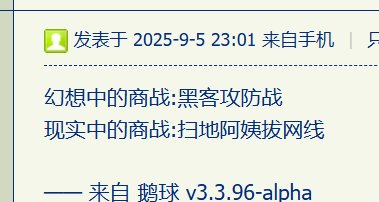

尼采《偶像的黄昏・格言与箭》№28
如果女人具有男人的美德，那么，她会让人无法忍受。如果她没有男人的美德，她又无法忍受自己。
卡壳世界・作文
“航空母艇？”范翗翷以为自己听错了，“你是说这两艘补给……艇？”
“是啊，低调点嘛，中尉艇副”，艾蕾娜用团扇挡住嘴，“哦呵呵呵闷声发大财识得唔识得啊？”
“好吧”，范翗翷不再质疑，准备开会。这间会议室设在舷号「01」的凤凰（Phoenix）号上，主要特点是这张长条桌子，艾蕾娜坐在一端，旁边站着红发小秘艾伦（Elune），示意自己坐在另外一端。
这时会议室的门开了，进来八个人，分两列走到桌边，先向艾蕾娜鞠躬，再向范翗翷鞠躬，然后落座。
“你们都是‘嵩与孩’出来的么？”范翗翷果然见多识广，“怎么都是这做派？”
“见贤思齐而已”，艾蕾娜搭话，“觉得别人的企业文化挺好，就拿来主义了。”
“好久不见，喵”，范翗翷右手边有人打招呼。
“你还是老样子，喵”，右手边第二个人打招呼。
“您几位是？”范翗翷不认识这些人。
“隔壁碎催而已，您这大忙人肯定记不得，喵”，右手边第三个人回答。
“为什么你们都‘喵’一声？”艾蕾娜奇怪，“以前开会没这毛病吖。”
“因为他的学名就叫‘喵’，阿纳克西喵”，右手边第四个人回答，“只不过不是我们学校。”
“你怎么会用这么……萌的学名？”左手边第一个人问。
“当时不知道学名可以自己决定，另外三个候选是咪咪、咪呜、喵嗷”，范翗翷很无奈，“我想喵就喵吧，反正后来都叫我彼得，就这么登记了。”
“那时你身上一定挂着猫吧？”左手边第二个人问，“听说过你号称猫爬架的典故。”
“是啊，并且随着排队越来越多”，范翗翷也开始拉家常，“轮到我的时候，简直裹成猫球。”
“那么今天怎么一只也没有？”左手边第三个人问。
“巧妇难为无米之炊”，范翗翷回答，“这里是天上， 两艘船一共只有一只，还在那边没过来。”
“已经派人去抱了，特意提醒你要带猫，还是给忘了”，艾蕾娜插嘴，“这是舰队开会，你是火鸟（Firebird）号艇长的坐垫，才能坐在那个位置上。”
“知道了”，范翗翷回答，然后问左手边几个人，“您几位是？”
“所谓名声”，左手边第四个人说，“就是认识你的人比你认识的人多。”
“猫来了！”金发小秘阿伦（Allen）抱着猫推门而入。
“你谁啊？”艾蕾娜忽然问阿伦。
“艇长……”阿伦愣住了，“司令……”
“艇长跟你开玩笑呢”，范翗翷赶紧说，“把那只艇长抱过来！”
话音刚落，那只猫挣脱了阿伦的怀抱，跳到桌子上跑过来，熟练的蹬鼻子上脸，在范翗翷的头顶盘着卧了下来。
“人都到齐了吧？现在开会”，艾蕾娜说，“先从自我介绍开始⸺估计这些人彼得都不认识⸺我是舰队司令兼凤凰号艇长，对面的彼得・范翗翷是大副，现在由二副三副盯着，两艘艇都在匀速直线运动。”
“我是凤凰号大副，兼火鸟号首席铲屎官”，范翗翷看艾蕾娜示意，知道该自己了，“火鸟号艇长是我头上这只猫。”
“我是二铲”，阿伦举手。
“我是三铲”，艾伦举手。
“知道你可能有意见，但是家族企业‘任人唯亲’的道理还是你告诉我的”，艾蕾娜对范翗翷说，“八只负三号飞行魔兽都是你打下来的，所以他们八个老伙计⸺现在的冒险同伴⸺鸟枪换炮了。”
“无所谓，反正我会飞”，范翗翷耸肩，“不过这‘二号人物’当得还真不容易。”
“我叫‘穆斯塔法巴盖里’，可能中间有个‘本’，往上本一个穆罕默迪，再往上再本一个伊布拉希米，然后没印象了，填表也用不着了”，右手边第一个人说，“学名唤作‘乜斜挑夫’，欧佩普辛乜斜挑夫（Οπεψιμ-Месетёв）”
“果然很有隔壁特色”，范翗翷一听就能反应过来，“专招斯拉夫人和马瓦力。”
“贵校往南，我们只好向北了，都在塞浦路斯低头不见抬头见”，右手边第二个人说，“我叫‘艾哈迈德阿凡提’，中间没有‘本’，后面是我爸的名字‘阿拉法特热西提’，后面没有了，全名就两截⸺学名是‘欧佩普辛修缪丢（Οπεψιμ-Хюмюдю）’。”
“也是同样风格”，范翗翷评价，“贵校已经发展那么远了吗？”
“我不是，本名叫居里克斯（Kylix）・奥林匹亚科斯”，右手边第三个人说，“本土还是要重视的，学名同本名。”
“不是‘帕纳辛纳克斯’？”范翗翷反问。
“那是我，提洛斯（Delos）・帕纳辛纳克斯，学名叫‘提洛克斯（Dhilox）’”，右手边第四个人说，“他不在雅典周边活动，家在伯罗奔尼撒半岛，靠近科林斯地峡。”
“看来贵校生源很杂”，范翗翷评论，“最起码陆权和海权两边都没放弃。”
“弊校与贵校一样，教授气元素相关伎俩”，乜斜挑夫说，“马汉刚出道就过气啦，现在是杜黑的时代。”
“已知匪穴在罗刹克拉斯诺亚尔斯克边疆区通古斯卡河畔法兰克福”，修缪丢接口，“求问马汉指挥的海军如何剿匪？”
“虽然心里不太痛快”，居里克斯接口，“还是要承认海军没办法，除非依靠航空兵或陆战队。”
“反过来也一样，陆军对于岛夷没办法”，提洛克斯补充，“即便被送过去，打输了都跑不掉。”
“是不是想起叙拉古了？”范翗翷哪壶不开提哪壶，“五万精壮就这么没了，汉尼拔跑路才处决两万。”
“还是空军方便”，艾蕾娜下结论，“无论是基洛夫空艇还是齐柏林飞艇，飞过去扔希腊火就可以了。”
“基洛夫和齐柏林有啥区别？”艾伦傻傻的问。
“基洛夫空艇的涂装更凶恶一点”，乜斜挑夫回答，“艇头像个鲨鱼头，张着血盆大口。”
“我们在座舱里看不见”，修缪丢补充，“飞到目标上空扔希腊火就是。”
“齐柏林飞艇的涂装更萌一些”，居里克斯说，“通常是彩虹条纹，还刷着标语‘Yes we can’‘Black live matter’什么的。”
"但是战术一样"，提洛克斯补充，“还是飞到目标上空，往下扔希腊火。”
“这么说来，贵校成了嗒嘀嗒家御用军校喽？”范翗翷这话似乎在问欧佩普辛四人组，实际上期待艾蕾娜回答。
“那是先代就决定的事，一直以来也没有你们学校出身的人”，果然艾蕾娜说话了，“有些老伙计待在克罗托内说什么也不肯走，都有家有业的不能强迫。”
“理由大概明白，就像比恰丽丝的黑狗那样忠诚”，范翗翷说话很损，又唱了几句，“🎶……海浪，沙滩，膏药大力丸，还有一位凯因斯坦……🎶”
“外婆的那啥湾”，阿伦接口，然后问范翗翷，“怎么你唱歌听起来这么怪？”
“不敢高声语，恐惊头上猫”，范翗翷念了两句诗，缓缓转头，“嘘……艇长在睡觉。”
“装什么蒜？”阿伦一巴掌把猫拨拉下来，“平时搂着撸个不停，开会的时候却在装模做样。”
“怎么可以对艇长如此无礼？”范翗翷把掉下来的猫接住，抚摸到平静下来，就这么抱着。
“圣骡力岛的事情大概听说过”，艾蕾娜看火鸟号乘务组打情骂俏很有趣，“到底在哪里？”
“就在爱琴海上”，居里克斯回答，“具体位置不知道。”
“不是克里特、萨摩斯和提洛”，提洛克斯补充，“只能用排除法一个一个筛。”
“既然如此，以后再谈近东和近南好了，现在距离地中海已经很远了”，艾蕾娜放话，“大西洋那边的四位跟彼得打个招呼？”
“哈啰，彼得，我叫「壬生（みぶ）潤一郎・米醋霍夫（Mizuhof）」”，艾蕾娜右手边也就是范翗翷左手边第一个人打招呼，“叫这个家名的人你见过很多了吧？”
“确实”，范翗翷承认，“不过又有前缀又有后缀，这个比较罕见。”
“那是因为《苗字必称令》生效时间不同”，壬生解释，“已经登录家名了，再追加苗字而已⸺顺便提一句，我来自东平，以前的京都，皇居搬到江户之后就改名了。”
“为啥不是‘西平’？”范翗翷的地理还算精通，“倒是听说过江户改名东京。”
“谁知道呢，既然改了就这么用呗”，壬生耸肩，“旁边的枇杷湖就没改成东平湖。”
“你知道瑞穗国主要有四个大岛，登记家名是‘米醋霍夫’的，都是来自本岛（もとしま）”，左手边第二人说，“我就唤作「竹本邦秀（たけもとくにひで）・四邦喇嘛（Yokunirama）」，来自东昌，四邦岛正中间的大城。”
“我叫「藤本藤次郎（ふじもとふじろう）・九崎喇嘛（Kusakirama）」”，左手边第三个人说，“来自东宁，九崎岛正中间的大城。”
“喇嘛……巴黎画廊梗还当真了”，范翗翷评价，“就你俩这么用？”
“不是，已经形成约定了”，竹本回答，“四邦岛出来的都会登录‘四邦喇嘛’家名。”
“九崎喇嘛也一样”，藤本补充，“拿来主义嘛，不问为什么，就像学英国人在船上养羊一样。”
“船上为啥要养羊？”阿伦问范翗翷。
“你问艇长吧”，范翗翷不想回答。
“艇长只会喵喵叫”，阿伦说。
“呐，为什么？”艾伦问艾蕾娜。
“傻丫头，等你生了孩子嫁了人就明白了”，艾蕾娜也不想回答。
“可是司令还没结婚吖”，艾伦追问，“难道生了孩子？”
艾蕾娜，激怒！
“司令别生气”，金发小秘阿伦赶紧跑到艾蕾娜旁边，顺便撵走红发小秘艾伦，“你去那边。”
红发小秘艾伦走到范翗翷旁边，轻车熟路的把猫抱过来开始撸。
“继续吧”，艾蕾娜的心情平静了一些。
“我来自东安，阿伊努岛正中间的大城”，左手边第四个人说，“按照填表的顺序，全名应该是「水本湯月（みずもとゆつき）・木本＝火本（きほん＝ひほん）」。”
“贵国的德语教师，不，所有与帝国联络的岗位，大多来自奥地利？”范翗翷忽然问。
“是啊”，壬生回答，“毕竟是凯撒身边人。”
“近水楼台先得月”，竹本念了一句诗。
“向阳花木早逢春”，藤本念了一句诗。
“我想也是”，范翗翷点头，“维也纳就一堆东字头家名，东石（Östein）东城（Östadt）东町（Östraße）什么的……毕竟国号唤作奥地利（Östreich）嘛。”
“确实如此，上有所好下必甚焉”，壬生点头，“就像江户流行京韵一样。”
“比如？”范翗翷好奇，“从前有座山？”
“むかしむかし”，壬生真说话了，“鸭码嘎洗脱呲啊利骂丝。”
“果然是字正腔圆的平阪官话”，范翗翷赞叹。
“能说出‘平阪官话’这种字眼，应该是对于改名事宜有所了解了”，刚才壬生就怀疑范翗翷能听懂穗语，至少对于常见汉字的意义及发音之间可以建立起联系来。
“从来只有新京笑，有谁听过旧平哭？改名的惯例也是规矩嘛”，范翗翷一句话带过，转向汤月，“阁下的全名似乎有些画风不对？刚才听说要针对填表裁剪一下？”
“确实如此，作为阿伊努人当中的祭司群体，我们没有家名或苗字的概念，而是‘术型’，木火水金土，一共五种”，汤月继续刚才的自我介绍，“出现在苗字位置上的，是自己的术型，而替代家名的，是父母双方的术型，就像西班牙人或葡萄牙人那样连起来。”
“如果重复了怎么办？”范翗翷听着很有趣，“听你的全名，感觉这个‘术型’似乎不能继承？”
“就是这样，不仅不能继承，同型之人还不会有后代”，汤月补充，“我的族内女友⸺现在的老婆⸺就叫「水本湯星（ゆほし）・金本＝土本（きんぼん＝どぼん）」。”
“听起来是很奇怪的设定”，范翗翷评价，“难道孩子的……呃，术型，是随机的吗？”
“就是随机的”，汤月点头，“双亲的术型一定不同，孩子的术型则是剩下三选一，概率平均。”
“看来阁下所在的群体⸺阿伊努人？⸺进行社会化抚养”，范翗翷评价，“所谓‘术型’平均分配，简直成了种姓。”
“就是种姓，还是历史遗留问题⸺没有气元素天赋的位置”，汤月点头，“但是阿伊努人已经彻底穗化了，就像普鲁士已经彻底德化那样，我们这些术士才是遗老遗少。”
“你们与外族通婚会怎样？”范翗翷继续问，“就没有什么保护措施吗？”
“与外族通婚时就是普通的男人女人，只有内婚才能觉醒天赋”，汤月回答，“族里规定男人要交血税⸺服十年兵役，女人交肚皮税⸺至少生三个孩子。”
“可是刚才你说你的族内女友与你术型相同”，范翗翷质疑，“按照你所描述的规则，不会有孩子吖。”
“我们都完成任务了⸺我从二十一岁开始服役，女友从十八岁开始生孩子，三年一个，第四个满两岁之后我就退役了⸺现在自由的过日子”，汤月轻松的说，“除非面临生死存亡，族里不会再征召预备役。”
“可是你说过术型相同不会有孩子吖”，范翗翷自以为抓住语病。
“我不想直接回答，女友的四个孩子是找别人生的，一样一个，同时我也与其它术型的女人生孩子”，汤月沉重的说，“奇怪么？各种情况历史上都发生过，像《忍法帖》那样凄美的虐恋也有过，你想知道可以讲给你听。”
“我不想知道”，范翗翷获得答案之后就喊停，“别人知道么？”
“我们都知道啊”，艾蕾娜说，“今天开会的目的之一，就是让你也知道知道。”
“卿本佳人奈何做贼？”范翗翷叹了口气，“我知道在你的位置上没得选，但是作为女人，隐藏在幕后当个富婆多好，为啥非得跳到前台当匪首呢？”
“我可以明确的告诉你，我没有想当匪首，不不不，阿塔曼（Атаман）”，艾蕾娜说，“是全体喽啰，不不不，全军官兵选择了我，让我当匪首，不不不，阿塔曼。”
不知何时，档案室主任黑发大秘欧琳（Orin）进来了，摆下法槌响板，提醒艾蕾娜：“小姐，有些程序该补个过场了。”
艾蕾娜点点头。
“提议艾蕾娜・嗒嘀嗒担任阿塔曼”，欧琳严肃的说，“谁赞成？谁反对？”
桌边八人连同艾蕾娜都举起了手，连猫咪都被艾伦举起一条腿，只不过是后腿。
“十比零第一次”，艾蕾娜吆喝。
“那猫能被人举腿赞成，就能被人举腿反对”，范翗翷提意见了，“我是大铲，应该替天行道，不不不，替猫投票……各种方针政策路线计划应该由我完成才对。”
“那就当牠弃权好了”，艾蕾娜继续吆喝，“九比零第一次？”
范翗翷耸肩摊手，表示自己没意见了。
“九比零第二次？”艾蕾娜一锤定音，“冻蒜！”
“高，实在是高”，范翗翷竖起大拇指，“真民主吖。”
“舰队司令艾蕾娜・嗒嘀嗒签署第一号阿塔曼令”，黑发大秘连文件都准备好了，“任命艾蕾娜・嗒嘀嗒为凤凰号艇长。”
“还那么多吖”，艾蕾娜看那厚厚一叠纸张就犯懒，于是抓起惊堂木，“咱们下回……梆……再签！”
“哪里走？”欧琳看范翗翷站起来往外走，于是出言询问。
“习惯了”，范翗翷回答，“听见惊堂木响就以为一段评书说完了。”
“今天这场作战会议是专门为你准备的，我们之间互相都认识”，艾蕾娜对范翗翷说，“有什么问题只管问。”
“好吧”，范翗翷走回来又坐了下去，问汤月，“你们完成任务之后都在干什么？我是问日子和之前有什么不同？”
“如果是不同术型的情侣，正常的结婚生孩子就这么过下去了”，汤月回答，“离开巫村的单身男女就去找穗人搭伙过日子，也有。”
“你算哪一种？”范翗翷真准备问个明白。
“同型情侣结婚也不会有孩子，通常承担族里安排的另外一项任务”，汤月回答，“作为夫妻，在穗人环境中生活，收养气元素天赋的孩子，抚养成编外战力⸺水平与其他天赋者持平⸺至少一个。”
“怎么在穗人堆里面认出你们来？”范翗翷没看出汤月与其他仨穗人有啥明显区别。
“这个，基本上，很难”，汤月回答，“不过我们取苗字都与普通穗人有差异。”
“穗人取苗字也很随意”，范翗翷接口，“听说过「佐藤」「铃木」多如牛毛。”
“我们就叫「佑藤」「昍木（ひびき）」什么的”，汤月回答，“一般在偏旁部首上动脑筋，比如道辺（みちなべ）
这种，部首相同，尤其是同型结婚，会反映术型。”
“比如『浦沢（うらざわ）』？”范翗翷不知道想起谁了。
“是，我家姓『津波（つなみ）』”，汤月回答。
“就是院子门口挂块名牌那种吧？”范翗翷追问，“没去过阿伊努岛，印象中本岛是这样的。”
“一样，已经在札幌落户了，一家四口”，汤月回答，“收养了两个孩子，男孩叫『光（ひかり）』，女孩叫『望（のぞみ）』。”
“你怎么肯定孩子有气元素天赋？”范翗翷问，语气愈发严肃。
“育婴堂鉴定的，我们去找肯定会与航空从业者⸺无论是气球还是飞艇⸺打交道”，汤月回答，“就这么搭上线了，现在老婆孩子都在火鸟号上。”
“呵，就像落草为寇之后接家小上山一样”，范翗翷感慨，然后扭头问抱着猫的艾伦，“你知道这事么？我反正不知道。”
“知道啊，司令家老伙计愿意跟着走的都上船了”，艾伦一副理所当然的表情，“你弄来火鸟号之后住房宽敞许多了呢。”
“两条万吨大补，就是漂在海面上也足够令人羡慕的”，艾蕾娜插话，“浮在空中也一样。”
“我们坐飞艇过来的时候，正好是你衣衫褴褛追司令的场面”，汤月回忆，“孩子们看着你的英姿，兴奋得两眼放光呢。”
“蛙蛤蛤蛤现眼了现眼了”，范翗翷手抚后脑勺，身上的床单不停抖动，“肉体凡胎追盖娅能核，还是有些勉强。”
“传说中能浮起一座城市那种应该有房子那么大”，艾蕾娜忽然说，“咱们这种人头大的只能浮起一艘船。”
“那也不错了，在空中飞总比在海面游要快”，范翗翷接口，“物资再多一点这两条船就不够用了⸺你家老伙计有点多。”
“哪怕你再弄两条船来”，艾蕾娜冷冷的对范翗翷说，“我也会任命艾伦和阿伦当艇长，你最多大副。”
“为啥？”艾伦不解。
“因为我没带部曲入伙”，范翗翷回答，“你就当中央军委开会讨论授勋时我旁听好了。”
“要不是当匪首，啊不，阿塔曼，必须要有军衔才能拢得住部队”，艾蕾娜感慨，“我真想学习周胡子好榜样，邓矬子也行。”
“哦，血脖红胡赤卫队，丕平转世灵童，志向不小”，范翗翷淡淡的评论，“等拿下政权再论功行赏吧。”
“哪里的政权？”阿伦问，“到现在我都莫名其妙。”
“你只要听司令的话跟司令走就是了，和以前一样”，欧琳回答，“不过今后也要知其所以然，从商会秘书向军政秘书转变。”
“我猜她俩只有在武装商船上服务的经验吧？”范翗翷问黑发大秘欧琳，“今后要你多费心了。”
“都是武家出身也不行，还是需要大头巾粉饰太平”，壬生评价，“况且有些头领并非平氏或源氏出身，当不了征夷大将军开不了幕府，最多当关白。”
“你在说啥？”范翗翷听壬生话里有话，“像是有感而发。”
“最近瑞穗局势，壬生夯（みぶはん）旧都出身比较关心时政”，竹本回答，“船上自动接收的电传新闻，都抢着去看呢。”
“最近那个关白，也姓凯因斯坦（Keinstein）或曰『石無』⸺居然不是藤原⸺丢掉了士庶两院多数”，藤本补充，“五五年授勋以来，不，自古以来从未有过。”
“还是有的”，汤月纠正，作为异族努力学习瑞穗历史有点效果，“上一个唤作『藤原邦昌（ふじわらくにまさ）』。”
“那家伙吖”，壬生想起来了，“身居太子太保就致仕了，不算善终。”
“那什么才算善终呢？”范翗翷听说过三公三孤什么的，但是不知道细节，“至少混个少师？”
“少字头官衔都是授予女官的”，壬生解释，“藤原邦昌这家伙先当‘太子准保’，然后跳过‘太子中保’和‘太子上保’，连升三级。”
“高，实在是高”，范翗翷竖起大拇指，“贵国官衔似军衔，真乃新古典军国主义或曰先军政治之典范。”
“过奖了”，壬生平静的谦虚，“有道是文无第一武无第二，总要让公家人物知道上下尊卑，军衔是天然的衡量方式，如同大陆这边的行政级别一样。”
“说起大陆，刚想起来瑞穗国在远西呢”，范翗翷忽然改变话题，“很难想象曾经与世界中心的两河有牵连。”
“瑞穗国比较接近政治理论上的民族国家：整个国家由一个民族构成，并且整个民族只存在于这个国家当中”，壬生明显理论水平比其他三人高出一截，“另外一个例子在远东，半岛，语言学家说也与两河有关系。”
“古埃及就知道大地是个球形了，还算出直径，按照这些数据，冲绳和楚克奇距离很近呢”，范翗翷感慨，“可是一直也没有环球旅行。”
“范翗翷先生去过冲绳？”竹本问，“还是去过楚克奇？”
“地球猜想在瑞穗也流行过，毕竟距离文明社会太远了”，藤本补充，“但是从来也没人向西航行到远东。”
“冲绳”，范翗翷回答，“当时也想验证地球猜想，也失败了。”
“范翗翷先生肯定是在天上飞吧？”汤月好奇，“能详细讲讲么？”
“其实没啥，就是全速飞了半日，计算里程早该到了，结果没有”，范翗翷回答，“于是决定回来，没想到回头后很快就见到陆地了。”
“和我们航海家的叙述一致”，壬生点头，“所有档案记载都提到了去时慢而回程快。”
“往上飞更明显，刚能看到大地的弧形就怎么也飞不动了”，范翗翷说，“整个大地边缘遭遇了特大号的缩地术吖，还是单向的。”
“我想起一些古地图”，竹本说，“通常在世界边缘有个巨人盯着，还有‘此路不通’警示牌。”
“那些地图还是T-O型，当成示意图看好了”，藤本说，“确实也意思到了，连巨人都不需要⸺古人的想象力需要，尤其是地图的读者。”
“你们登录的家名是什么？”范翗翷问汤月，“我想想是否认识你的老乡。”
“我家直接从阿伊努岛上船，没在大陆落地，没登录家名”，汤月回答，“别人嘛……岛上的穗人会登录‘阿伊努克斯（Ainux）’，我们祭司会登录‘乌塔利希（Utarig）’。”
“看来没有”，范翗翷回忆，继续问，“你认识自称‘厄斯坦德喇嘛（Östandrama）’的家伙么？”
“那是人偶师，他们自称替身使者”，壬生见汤月摇头，于是接口回答，“穗人当中木系天赋者甚多，很多人自制人偶作为替身，不仅仅是替死鬼替罪羊，也有很多功能呢。”
“人偶师都是木系天赋者么？”范翗翷问。
“几乎都是，毕竟木头塑形容易”，壬生回答，“也有金属天赋者和传统土元素天赋者，但是数量极少。”
“东方甲乙木吖”，范翗翷嘟囔一句，“看来贵国应该与格伦斯坦（Grünstan）关系密切，在诺斯替那帮人看来。”
“话说我们要去哪里？”艾伦问，“我们现在在哪里？”
“我们正在远南，好望角和凤爪群岛附近”，欧琳回答，“一路上的收获⸺主要是飞行魔兽⸺是中南地区⸺也就是‘撒哈拉以南非洲’⸺的特产，除此之外只能去西美找了。”
“我们要去寻找‘未知的南方大陆’，应该是‘南方丙丁火’的具现化，也是诺斯替那帮人说的”，艾蕾娜回答，“两船物资有点不够呢。”
“有没有考虑过水面船队？凤爪群岛有得是流浪船和冒险者”，范翗翷问，“另外，南非的乱子不管了？眼瞅着第四次英荷战争就要打起来了。”
“不管了，已经帮忙弄了仨伯爵顺便偷了一条船，剩下的看布尔人自己了”，艾蕾娜回答，“另外，水面船队速度跟不上，只好放弃⸺凤凰号改装时就没考虑过再降落，否则不会在船底装桅杆挂旗语。”
“听你的意思，设想中还是有水面舰艇的，只不过要服从你在天上指挥？”范翗翷听出艾蕾娜的远大志向。
“当然，盖娅能核⸺哪怕人头大的⸺只有两颗，浮起这两条万吨大补已经不错了”，艾蕾娜回答，“将来总要找块根据地，凤爪群岛已经没位置了，都让先来的海盗瓜分完毕了。”
“也是，你家这么多老伙计总要有地方落脚，成天在天上飘着也不是个事儿”，范翗翷出言讽刺，“下一代看着南十字星大小麦哲伦星云长大还说得过去，吹着罡风长大从来没有脚踏实地就过分了。”
“这不是准备好陆战队了么？从南边回来一无所获的话就要准备火并了”，艾蕾娜指向右手边，“正好每个岛一个头领，零散浪人都能找到组织。”
“别的不知道，津波先生及夫人都是水系天赋者，专业不对口吖”，范翗翷询问，“阿伊努，不，乌塔利当中就没有气系天赋者吖。”
“确实如此，穗人觉醒天赋有概率，乌塔利一定会觉醒，但是一定没有气系天赋者”，壬生回答，“乌塔利与穗人通婚的后代倒是有，可惜不能再传下去。”
“你们就没考虑过引进优种？”范翗翷问汤月。
“历史上各种情况都出现过”，汤月回答，“还有花了几代人时间搞什么‘新乌塔利婴儿’计划，但是毫无例外都失败了。”
“专业不对口当空军有什么感想？”范翗翷问汤月，“尊夫人也是，怎么教导下一代飞来飞去吖？”
“有他们呢”，汤月用下巴一指对面欧佩普辛四人组，“标准的学院派出身。”
“小孩子才做选择题，成年人当然是全都要”，艾蕾娜说，“津波两口子是同一架运输机的机组，其他四对乌塔利夫妇也一样。”
“我记得只打下八只负三号飞行魔兽吖”，范翗翷环顾四周尤其是桌子两边的八个人，“还是你们又打下几只？”
“飞机就一架，机组有五套”，汤月回答，“每次可载八个兵，一共三队兵，不算替补。”
“四邦运输机有三个机组，两队兵”，竹本回答。
“九崎运输机也一样，仨机组俩兵队”，藤本回答。
“本岛人多一些，四个机组五队兵”，壬生回答。
“原来是分封制”，范翗翷明白了，然后转向欧佩普辛四人组，“你们呢？”
“两艘飞艇，每艘用上两颗负三号魔核”，乜斜挑夫回答，“载重比之前还多出好几吨。”
“可惜不能持久，悬停还是需要气囊”，修缪丢接口，“魔核的能量很快就用完了，只好飞回来充能。”
“盖娅能核可以给四种魔核充能，直接使用时六种能量都能输出”，居里克斯说，“真是好东西。”
“基洛夫和齐柏林各一艘，凤凰号甲板上刚能停下”，提洛克斯说，“就是希腊火装填比较费工夫。”
“兵工厂设在凤凰号上，轰炸机编队也停在这里”，艾蕾娜插嘴，“百把武士⸺算上替补⸺宿舍都在火鸟号上，运输机编队也停在那边。”
“这些事情我都不知道”，范翗翷看着抱着猫的艾伦说，“我想艇长牠更不知道。”
“我知道”，艾伦说，“现在正在往凤凰号上转运货物，刚才就是阿伦抱着艇长从舷梯走过来的。”
“我也知道”，阿伦说，“火鸟号没有经过改装，还可以如同普通船只那样靠港装卸货，到天上再倒腾。”
“你们决定就好”，范翗翷耸肩，没有部曲的自己肯定会被架空，已经有心理准备了。
“我……向黎塞留阁下保证我……没喝！”这时会议室门被撞开，冲进来一个酒气熏天的家伙。
桌边八人都向艾蕾娜处移动，在范翗翷两侧都腾出一个空位。来人犹豫片刻，掇把椅子在范翗翷左边坐下，与穗人一边。
“搞定了”，来人往桌上扔了一颗负三号魔核，“真不容易。”
“又多了一架运输机？”范翗翷看着来人举动，不难猜出其中意义。
“俩机组和两队兵可以归队了”，壬生叹了口气，“江户，不，东京也有运输机了……五东出星方，有利瑞穗吖。”
“自打江户冬之阵、江户夏之阵以来，本岛东西就不对付”，竹本叹了口气，“西军想要扫平关东还是做不到。”
“比那还早，关原之战以前公家武家就互相看不顺眼了”，藤本叹了口气，“既然不分地域按照阵营站队，战后大规模人口交换不可避免。”
“又一次源平合战？”范翗翷听对话内容结合自己所知瑞穗历史常识猜测。
“差不多，但没分出胜负”，欧琳回答，“现在瑞穗本岛上既有关白为首的朝廷又有德川幕府，其它仨岛两边都不得罪。”
“我叫草本，学名欧佩普辛强者，本名同学名”，来人醉眼惺忪的对范翗翷说，“选学名的时候，除了强者就是安之、行也、美哉，我还想怎么都那么喜欢虚字。”
“看来你也遇到了类似的问题，你的选择会决定你入学后的待遇”，范翗翷评论，“完全是面试教师自由心证，比如我，除了喵就是咪，选什么都一样。”
“毕竟弊校全面对标贵校嘛”，草本醉醺醺的说，“贵校出品的人才也确实有过人之处，比如这次，学你喝朗姆酒，果然把魔兽打下来了。”
“光凭喝酒可不行”，范翗翷觉得好笑，“这家伙会飞，一下子干不掉的话就要追着牠打，一边飞一边打，确实不容易。”
“晴空百裂斩就是阿纳克西美尼秘传，我们也照念不误”，草本叹了口气，指着自己腰上的武装带说，“我们二十多人围殴才干掉。”
“二十多人围殴？”范翗翷听着奇怪，但是一看草本的武装带就明白了，“负一号魔核也能废物利用吖。”
“对你来说或许是废物，对我们而言是宝贝”，草本反驳，“负一号魔核刚好能浮起一个人，负二号魔核可以驱动小型单人装备呢。”
“那挺好啊”，范翗翷随口称赞，然后忽然想起一件事，“你们陆战队员不会都是这种配置吧？”
“当然都是，武装到牙齿”，草本大声说，“陆战队的战斗力就和陆军单位一样，一个骑士就是一支武装小队。”
“草本”，艾蕾娜说话了，“你的替补有几个？还差几个兵凑够第三队？”
“替补有六个，都是已经授带的”，草本回答，“还差俩。”
“那好，竹本藤本，你俩各出一个替补⸺总拿的出来吧⸺给草本凑够第三队”，艾蕾娜指示，“津波你出两个机组，支援壬生和草本。”
“Roger”，三人都表示没问题。
“人等装备吖”，范翗翷猜测部队建设思路，“不过没有平顶船了，这两艘的甲板上也没位置了。”
“等回来再说，现在就这样了”，艾蕾娜表示，“没准那时候又有人鸟枪换炮了呢。”
“在座的都是机主吧？”范翗翷看艾蕾娜分配人手，不难猜出组织架构。
“是，津波夯是飞行员，草本夯是陆战队员，竹本夯和藤本夯都是地勤”，壬生回答，“就我，什么都不是。”
“壬生先生谦虚了”，范翗翷知道这种纯・机主犹如纯地主和纯房产主一样，肯定有其它手段保持控制，“三波次打击⸺前锋和中坚都是40人，预备队24人⸺都是武装到牙齿吗？”
“当然都是！”草本大声回答，“授带的时候，一个个士气高昂着呢！”
“左兵右将，开会的都该知道，包括你”，范翗翷叹了口气，“喽啰要左一点，冲锋陷阵悍不畏死，头领要右一点，听得懂战略战术。”
“好像听说过”，草本挠头，“你想说什么？”
“不仅是这次授带，以前授剑授铳也一样”，范翗翷反问，“一个个把武器装备擦得锃光瓦亮，经常全副武装照镜子吧？”
“是啊”，草本听范翗翷的语气，估计没什么好话，“怎么了？”
“总有一天你会知道⸺喽啰到死都不会知道，你知道就行⸺所谓‘铁打的营盘流水的兵’到底是什么意思”，范翗翷又叹了口气，“不是给每个马云（marine）配一条武装带，而是给每条武装带配一个马云。”
“我知道吖”，草本不以为然，“以前在武装商船上干过，有劫掠许可证那种，和海贼也没什么区别。”
“我说的不是海贼”，范翗翷感觉和醉醺醺的草本说话有一种鸡同鸭讲的感觉，“哪怕是正规军，也有同样的规矩。”
“我知道吖”，草本还是不以为然，“在海上看见敌国正经生意人也像看见海贼那样，就当自己是海军一样⸺当然还有在海上不知道已经停战于是抢了‘友邦’靠岸就被绞死的，这时就不是海军待遇了。”
“优言难劝该死的鬼”，范翗翷有些无可奈何，“我问你，如果你阵亡了，后事如何处理？”
“有固定流程或曰惯例”，草本回答，“战场上有副手接替，接班顺序都固定好了，家里有抚恤，几乎就和正规军一样。”
“如果你一直没有阵亡呢？”范翗翷决定打破砂锅问到底，“这种刀头舔血的生活到什么时候为止？”
“怎么会？当贼哪儿有退休的？”草本哈哈大笑，“瓦罐不离井边破，将军难免阵前亡，夜路走多终遇鬼……呃，总之就是‘醉卧沙场君莫笑’的意思。”
“你就别管了”，抱着猫的艾伦对范翗翷说，“我们商会⸺现在是部队了⸺有成熟的处理流程。”
“真正的亡命徒，视死如归那种，尼德兰有得是，我想起来了”，范翗翷把视线转向窗外，“他们在忙活什么？”
“换纹章涂装”，艾伦回答，“司令说嗒嘀嗒的纹章还是传统四分区，远处识别度不高，让给换成她个人的。”
“不识庐山真面目，只缘身在此山中”，范翗翷念了两句诗，形容坐在凤凰号上看不见船首涂装的情况，“换成什么了？”
“🎶……蝴蝶飞呀，就像童年在风里跑”，艾伦忽然开始轻声唱歌，“感觉年少的彩虹比海更远比天还要高……🎶”
“英雄的力量取决于其心灵的测度（For a hero's strength is measured by his heart）”，范翗翷也念了一句歌词，然后问艾伦，“新纹章是彩虹下面一只蝴蝶么？”
“没有彩虹，只有一只大蝴蝶”，桌子对面的阿伦接口，“司令说要涂成五彩斑斓的黑，就用青木漆了，即便没有外光也会在蓝绿之间不停变换。”
“唔，那样确实很显眼”，范翗翷感叹，“不像我的火鸟号，船首只有天蓝底色红蜻蜓，描了白边。”
“但是整条船都刷满了口号，还是荧光漆”，艾蕾娜接口，“喧哗上等、夜露死苦什么的，晚上看着特别扎眼。”
“蛙蛤蛤蛤一时冲动一时冲动”，范翗翷手抚后脑勺，想起当时哼着「我是一个粉刷匠」的童心未泯，“话说回来，离开中南这么远了，橡胶备货没有？再往南可没有。”
“当然备货了，我们……咱们以前是商会，这种事不会忘”，欧琳回答，“你只管在艇长室睡大觉好了，别人办得妥妥贴贴。”
“艇长自己喜欢睡窗台，还专往窗帘里钻”，范翗翷解释，“我有什么办法？况且只有那张床能容下我。”
“没说你什么，毕竟king-size的单人床只有艇长室有”，欧琳继续，“你只管撸猫睡觉好了，有事会派人找你的。”
“好吧”，范翗翷答应下来，然后又想起一件事，“南方丙丁火可能是充沛着硫磺与火焰的环境，黑曜石地面锋利得很，几下就能切碎鞋底，我能脚不沾地所以无所谓，你们怎么办？没有鞋就寸步难行了吖。”
“船上有制鞋作坊，还有裁缝工坊，老伙计家女眷总得有点事干”，艾蕾娜发话了，“你就别操心了。”
“好吧”，范翗翷无奈的答应，然后转向汤月，没话找话，“听说青木是阿伊努岛特产？”
“是啊，不过已经被英国人引种到阿基戾控和东美了”，汤月回答，“纽荷兰、纽泽兰、纽芬兰……再往南种不活了。”
“这样啊”，范翗翷点头，“不过那边气候也不算太冷⸺和西伯利亚没得比⸺到底为啥不能引种到其它温带地区？”
“不知道，本来我们也没想出口，反应过来的时候，树苗已经被英国人偷走很多了”，汤月回答，“不过在英国治下也是特许经营，世袭从业者也姓青木（あおき）……提尔伍德（Tealwood）。”
“唔……好像听说过”，范翗翷随口应声，百无聊赖，“是不是该开饭了？至少庆祝草本先生打猎满载而归，喝几杯意思意思。”
桌边九人都兴奋起来，艾蕾娜也从善如流，吩咐开饭⸺工作餐。
“这才像水手的样子”，范翗翷评价桌边九人的做派，“水手就应该躺在甲板上就着酒桶喝得烂醉如泥。”
“你在尼德兰见的水手都是这种么？”草本醉醺醺的搭话，“告诉你空贼和海贼的最大区别⸺喝多了内急时的表现。”
“不都是往船外撒么？”范翗翷总见过猪跑，“谁弄脏甲板谁负责清洗，值日生可高兴了。”
“但是台词不一样”，草本说，“海贼多半会唱歌‘一把火铳手中握，一颗红心向帝国’。”
“那空贼呢？”艾伦忍不住问。
“吔屎啦你！”草本哈哈大笑，“也不管船在哪里，下面有没有人。”
“这么说来山贼还在用旱厕”，范翗翷搭话，“没有水冲也没有地方排放，值日生负责掏大粪。”
“吃饭的时候不要说这么恶心的话”，艾蕾娜警告，“先吃点东西垫垫⸺杨君炒饼。”
“不是炒饭么？”范翗翷看餐盘已经端到眼前，里面白菜丝豆芽胡萝卜丝尖椒丝都有，忍不住嘟囔，“可别又是杨・索别斯基在驰援维也纳途中迷路……”
“不是他本人”，欧琳解释，她们三个没在桌边落座的秘书没有餐盘，“评书里说老国王没有儿子，只有五个闺女，人称‘五朵金花’。”
“评书不是说他家本来人丁兴旺可惜‘七子去六子回’么？”范翗翷边吃边说，“把偌大家业交给了‘羊门女将’。”
“那是另外一本，这本说老国王长女杨招娣・索别斯卡娅”，艾蕾娜边吃边回答，“四个妹妹也招、又招、再招、还招，这炒饼是幺妹杨还招闯入民宅翻箱倒柜把所有能吃的东西烩成一锅。”
“确实有勇者做派”，范翗翷几口吃完炒饼，环顾四周发现自己算慢的。
“上酒！”艾蕾娜吆喝，指挥众人都给满上，“干杯（‘勒海姆’）！”
“怎么味道这么怪？”范翗翷尝了一口觉得不习惯，“把包装给我看看！”
“自己酿的，船上有德鲁伊”，艾蕾娜扔过来一个空纸盒，“我不想用蒙巴顿的瓶子。”
“船宴用酒：大泽古池原浆老茅液”，范翗翷看见盒子上手写的名称，胃里翻江倒海，抓过纸篓吐了个痛快。
“还喝么？”艾蕾娜问，“喝不惯的话可以换回蒙巴顿的朗姆酒。”
“不用了，也没胃口了”，范翗翷回答，“我看这边暂时没我啥事⸺一切都有人办得井井有条⸺趁这个机会回去办点私事，看看老朋友。”
“I'm expecting”，艾蕾娜说，“for.”
“哎呦吓死我了，这说话大喘气”，范翗翷说，“等着吧，争取快去快回。”
说完，范翗翷走出门外，就这么走到空中，认准北方，往前一扑，「砰」的一声突破音障，原地只留下一团雾气和一张在空中飘荡的破烂床单。
尼采《偶像的黄昏・格言与箭》№29
“以前，良心要啃多少东西呀！它曾经有着多么好的牙齿啊！……可现在呢？这些牙齿怎么没了？”一个牙医的问题。
卡壳世界・作文
“所谓‘武装到牙齿’只是个比喻”，菲利克斯说，“我是不知道任何装备在牙齿上的武器。”
“牙好，胃口就好，吃嘛嘛香”，乌呼鲁搭腔，“客人胃口好，咱们的生意也就好。”
“日安”，这时斯米尔诺夫推门而进，跟俩人打招呼。
“努鲁是你啊”，菲利克斯刚想说还没开始营业，一看来人就改为打招呼，“吃了么？”
“当然没有”，斯米尔诺夫坐在吧台，跟乌呼鲁说，“就来份‘良心’垫垫。”
“看来我不在的时候你们有了新黑话”，菲利克斯有点不高兴。
“也不是，上午透气的时候⸺你还没起床⸺来人了”，乌呼鲁解释，“你说过官人不能得罪，就把土豆切成薄片油炸，让人用不了叉子，炸好了撒点盐就端出去了⸺结果大受好评⸺斯米尔诺夫先生当时也在，也点了同样的一份。”
“那‘良心’是怎么回事？”菲利克斯追问。
“炸土豆片当时心里正想着活报剧台词，我嘀良心大大嘀坏了”，乌呼鲁解释，“不小心说出来了，只好跟客人⸺盖世太保百户呢⸺说这道菜没有其它花活，除了主料就是盐，实乃本店良心。”
“这么说来我做的那些料理都成了花活了？”菲利克斯不怒反笑。
“这边的客户素质就那样”，乌呼鲁狡辩，“你看大门两侧的档口⸺卤煮火烧和驴肉火烧⸺生意都很不错呢。”
“到底什么是火烧，什么是烧饼？”斯米尔诺夫插嘴问，“总是分不清楚。”
“有芝麻⸺至少一面⸺的是烧饼，没芝麻的是火烧”，菲利克斯回答。
“火烧可以细细的切做臊子，烧饼通常不用”，乌呼鲁回答。
这时裴利岑科进门了。
“本店还没开始营业……欢迎光临，这位客官请坐”，菲利克斯刚想出言拒绝，一看是盖世太保，连忙改口。
“先来三份良心，除了盐之外还要撒点别的佐料”，裴利岑科点餐，“一份撒胡椒，一份撒孜然，一份撒花椒和辣椒。”
“好嘞”，乌呼鲁痛快的答应下来，生火烧油。
“味道还是你这里更好”，裴利岑科估计中午去别家店货比三家了，“我明白为啥了，你这里土豆片切得更薄。”
“看来你刀工见长啊”，菲利克斯夸一句。
“蛙蛤蛤蛤过奖了过奖了”，乌呼鲁手抚后脑勺，“其实都是家伙事儿的功劳⸺工欲善其事必先利其器嘛⸺朋友帮忙做的。”
“这玩意能切片？”这时菲利克斯才注意到乌呼鲁手中的工具。
“不仅切片，切条、切丁、切丝都行”，乌呼鲁一指厨台，“全套的，就像木工背包里装的家伙事儿一样……您用木制护手按住土豆，刀片快着呢！”
“哦？还能切丁？”盖世太保听着有趣，“正好来一份咖喱虾仁饭。”
“对不起，没有”，菲利克斯拒绝，然后解释，“还没蒸米饭，虽然现在冰箱普及了，但是大规模存放剩饭菜不是餐馆的日常操作……总之不到饭点没饭。”
“这样啊”，盖世太保知道这个道理，也没过多纠缠，“那就炸份薯条，再炒个酸辣土豆丝。”
“好嘞”，乌呼鲁答应下来，开始用工具给土豆切条。
那边菲利克斯运用专家级刀工，切的土豆丝又细又均匀，下锅就熟，反而先出餐。
“不错”，盖世太保尝了一口土豆丝，称赞。
“你会用筷子？”这时乌呼鲁也炸好薯条了，配上一碟自制蒜蓉辣酱和番茄酱双格蘸料，端上来的时候正看见盖世太保夹了一筷子土豆丝塞进嘴里，忍不住出言问。
“是啊，怎么了？”盖世太保很奇怪，“不然怎么吃？学英国佬用叉子戳豌豆吃也不用勺？”
“没什么”，乌呼鲁挺失望，自己那点小心思都不起作用，菜品也早就有人发明。
“这不算啥，我刚来的时候学礼仪，想知道法国绅士怎么吃鸡腿”，斯米尔诺夫打圆场，“偷看的结果是⸺他们直接上手抓。”
“裴大人怎么有空过来了？”菲利克斯没话找话。
“不喜欢看球，下午没啥事干”，裴利岑科直说，“我看你这儿外租的档口也都歇了，都去看球了吧？”
“是啊，平时他们一起到深夜呢”，菲利克斯搭话，“礼拜天休息一天倒也不错。”
“等散场了你这儿就该热闹了吧？”裴利岑科继续搭话。
“是啊，居酒屋嘛，就是晚上热闹”，菲利克斯继续回答，“礼拜天晚上要格外热闹一些，看完球之后都过来吹牛了。”
“今天是哪场？”乌呼鲁问，自从黑鬼四对面空地被邮局占用之后，礼拜天下午的演唱会也没有了，百无聊赖。
“凯撒杯加赛，慕尼黑中央陆军对海德堡前卫，主客场都打起来了”，斯米尔诺夫回答，“只好在第三方中立场地加赛一场。”
“军犬对警犬”，裴利岑科评价，“每次碰面都会很热闹。”
没人搭话，这种话「军犬」或「警犬」自己说可以，别人不行。
“你们能分清雪橇三傻么？”裴利岑科也知道为啥没人搭话，顺势转换话题。
“拉布拉多可以”，乌呼鲁接口，“哈士奇和阿拉斯加不行。”
“阿拉斯加的颜色比哈士奇更深一些”，斯米尔诺夫接口，“一个远东，一个远西，为啥这么像呢？”
“我也经常认错”，裴利岑科说，“跟你们说个笑话吧，角色叫狗Ａ和狗Ｂ好了。”
“洗耳恭听”，菲利克斯接口。
“说有一天狗Ａ对狗Ｂ说”，裴利岑科舔舔嘴唇，继续说，“你老婆真棒！”
没人接口，都等下文。
“狗Ｂ对狗Ａ说”，裴利岑科继续说，“俗话讲，老婆是别人的好，孩子还是自己的好，你说呢？”
没人接口，也不笑。
“然后狗Ｂ应该龇牙咧嘴笑成‘皿’字在前面跑”，裴利岑科干笑几声，“狗Ａ一边狂吠一边飙泪⸺就是漫画里那样⸺在后面追。”
“蛙蛤蛤蛤”，菲利克斯、乌呼鲁、斯米尔诺夫三人手抚后脑勺尬笑。
“那我再说个笑话……段子吧”，裴利岑科似乎很有成就感，“说杨・索别斯基国王为了驰援维也纳而组建翼骑兵……”
“然后迷路了”，乌呼鲁接口，“人困骡乏之际又有人上贡美食吧？”
“不，还没到那时候”，裴利岑科纠正，“以前的骑兵是用马的，只不过上阵前要骟掉，否则会被骚母马勾引而自乱阵脚⸺军史上有过很多例子了，正反面都有。”
“略哟耳闻”，斯米尔诺夫接口，“所以后来都用骡子了？”
“正要说这事，总之当时马厩里只剩下一大批思春的单身母马”，裴利岑科说，“主事儿的通天大圣弼马懿胡悟深看着不落忍，念了两句诗‘望见陌头杨柳色，悔教夫婿觅封侯’，放了几头公驴进来。”
“想必母马高兴坏了”，菲利克斯接口，“从那以后就用骡子都知道了⸺专岗专用嘛⸺那公驴呢？”
“当然也不会浪费”，裴利岑科说，“老国王次女杨也招・索别斯卡娅知道这事之后，发明了一道美食，对，就是驴肉火烧。”
“落日照大旗，骡鸣风萧萧”，乌呼鲁念了两句诗，看着门外不远处码头，货轮桅杆顶端的港旗被风吹得猎猎作响，码头上等着拉车的骡子希律吕的打响鼻，无话可说。
“悠悠旌胜，萧萧骡鸣”，菲利克斯也念了两句诗，“这才是出处⸺不学《诗》无以言⸺不要拿着二设喷原创。”
“作为异族，你们的汉语水平不错了”，这时门口合页挡板和风铃同时响，进来一个叼着玉米烟斗⸺但没点燃⸺的家伙，“要么从小好好学习天天向上，要么就在归化培训班里面下过苦功。”
“来者何人？”裴利岑科听来人口气甚大，有些不太高兴。
“汉堡市委常委，市公共安全委员会主任，市城防司令，刘里克资深篓夫长”，来人说话停顿片刻，“麾下勤务兵中士，冈萨雷斯。”
“原来是冈大人”，裴利岑科点头，“我是盖世太保百户裴利岑科。”
“给裴老爷请安”，冈萨雷斯连忙打千。
“免了”，裴利岑科大剌剌的挥手，“冈大人此行有何贵干？”
“我看裴大人也是身着便装”，礼数够了，冈萨雷斯说话也自在起来，“想必和我一样随便坐坐。”
“欢迎光临”，一听也是官人，菲利克斯赶紧招呼，“随便坐，想吃点什么？”
“先切盘驴肉和板肠双拼吧”，冈萨雷斯也坐吧台，与裴利岑科相隔一个空位，“来一扎啤酒，冷的。”
“好嘞”，乌呼鲁答应下来，去门口档口取熟肉⸺租户同意的⸺菲利克斯盛啤酒并加冰块。
“门前冷落车骡稀，老大嫁作阉人妇”，冈萨雷斯念了两句诗，“不学诗，无以言。”
“阉人救场如救火，前夜米兰唱歌剧”，菲利克斯也念了两句诗，“现在我已经不是老大了。”
“什么歌剧？”裴利岑科听对话气氛不对，插嘴问。
“罗密欧，罗密欧”，冈萨雷斯忽然站起来踱步，用捏着烟斗的手指向菲利克斯，“なぜお前はロミオだったぞ？！”
“To be or not to be”，菲利克斯站在吧台兼厨台里面，双手抱胸，“那是个问题。”
“这些是话剧吧？”裴利岑科质疑，“我知道闪含阋墙很热闹，不过欧洲是属于雅弗的。”
“很遗憾这里是汉堡（Hamburg），汉族自治区”，冈萨雷斯说，“要是闪宫（Semplatz）⸺不来梅⸺那就是他的主场了。”
“我好歹在血统上算作色目人”，菲利克斯出言讽刺，“而你只是个跟班帮闲。”
“夷狄入华夏则华夏之”，冈萨雷斯不以为耻反而引以为荣，“夷狄之有君，不如诸夏之无也。”
“我不想和客人斗嘴”，菲利克斯先放弃，“况且现在已经不当色目人了。”
“朱家有女初长成，温泉水滑洗凝脂”，斯米尔诺夫念了两句诗，“小丫头片子又没胸又没腚，骡力控偷窥个什么劲？”
“七月七日长生殿，始是新承恩泽时”，乌呼鲁念了两句诗，“骡力控行动力爆表，先拔头筹了呢。”
“天长地久有时尽，此恨绵绵无绝期”，冈萨雷斯念了两句诗，“三年血赚，死刑不亏。”
“樱桃美酒日光杯，欲饮枇杷骡上催”，裴利岑科念了两句诗，“女主角的悲惨遭遇略有耳闻。”
“美泉宫外夫妻别，泪比歪脖树下多”，菲利克斯念了两句诗，“和贩夫走卒打交道多了，对于帝王将相的浪漫史就不怎么感兴趣了。”
“这又是什么典故？”裴利岑科问，“还是杜撰的？”
“不，布拉日隆子爵……夫人”，冈萨雷斯说，“莫以今时宠，能忘旧时恩，看花满眼泪，不共法王言。”
“想起来了”，裴利岑科恍然大悟，“隔壁法兰西那个种驴（Dulus）写……抄的吧？”
“普世种驴（universal Dulus）是一个家族，最著名的成员是祖孙三代”，菲利克斯解释，“裴大人提到的是文抄公大种驴，继承了其亲爹老种驴的魁梧体格和充沛体力，并且遗传给了其亲儿子小种驴。”
“老种驴行伍出身，气力过人，可以用四根手指插入四杆火铳枪口将它们平抬起来”，冈萨雷斯补充，“大种驴在巴尔扎克出殡时和雨果一起抬棺，其体力给雨果留下了深刻印象，启发了雨果构思冉阿让这个角色。”
“小种驴双手抓人肩膀可以把人举起来”，乌呼鲁补充，“在大种驴晚年穷困潦倒时予以赡养，荣获了‘妈妈最爱之子’，不不不，‘爸爸最杰出之作品’之称号。”
“种驴一家子我知道了”，裴利岑科说，“那‘普世’又是怎么回事？”
“这题我知道”，斯米尔诺夫抢答，“种驴一家子是诺斯替当中热衷传教的一派。”
“竟有这样的事？！”裴利岑科睁大眼睛，额头亮晶晶的。
“一般诺斯替信徒都是‘爱信信，不信滚’的态度是不是？”斯米尔诺夫解释，“就说天上的星官，随着航海家向南，三垣二十八宿不够用了是吧？”
“正统诺斯替信徒会说南十字和大小麦哲伦星云不归玉皇大帝祂老人家管”，菲利克斯接口，“所以不是普世价值……信仰。”
“种驴他们这一派不一样”，冈萨雷斯补充，“说我们赶上好时候啦，天庭正在开疆拓土，封神榜又开，准备提拔干部。”
“有趣”，裴利岑科评价，“这么说来这帮人主要待在凤爪群岛等着升官发财喽？”
“也不尽然，远西⸺确切说是西北角⸺也有不少”，冈萨雷斯回答，“那边又有阿基戾控又有镁塔利亚⸺就是西美⸺诺斯替信徒扎堆，对了，还有个奇怪的瑞穗。”
“格伦斯坦全是热带雨林，除了木系天赋者之外都不喜欢那里”，菲利克斯补充，“镁塔利亚也这样，名不副实，最奇怪的是阿基戾控，按理说当地土著应该从来没见过南十字和大小麦哲伦星云才对，结果不然。”
“咳，那就扯远了，让诺斯替拥趸操心去吧”，乌呼鲁发现自己插不上话，信息领域超过了归化培训班讲授的常识范围，“报纸上说美泉宫马厩有一匹母马侧卧产仔，小骡驹二十分钟就站起来了呢。”
“马厩……那是能生出耶少爷的神奇所在”，斯米尔诺夫插科打诨，“生出骡子算不得新闻。”
众人哈哈大笑，店内外充满了快活的空气。
“看来各位相处融洽吖”，这时有人说话，撞开合页挡板，用手拍开风铃，总之就是很嚣张的进门，原来是身着便装的税吏。
“欢迎光临，请随便坐”，菲利克斯一看又是官人，连忙招呼。
“来碗卤煮菜底”，税吏吩咐，走到吧台另外一边，也是与盖世太保相隔一个空位。
“好嘞”，乌呼鲁痛快的答应下来，然后去门口档口切熟肉⸺也是租户同意的⸺忽然发现一个问题，“汤是冷的。”
“没关系，只管切就是了”，税吏不在乎。
“克大人还挺随和”，盖世太保随口称赞。
“那怎么行？这可不是本店的待客之道”，菲利克斯有不同意见，“努鲁，拜托你了。”
斯米尔诺夫点头，从乌呼鲁手中接过碗，端到税吏面前放下的时候已经热气腾腾了。
“想不到斯老板还是火系高手”，盖世太保觉悟和警惕性甚高的赞叹。
“咳，出门在外嘛，最重要四件事”，斯米尔诺夫轻描淡写的回答，“水、火、食物、避难所。”
“不错”，税吏夹了一块肺头吃，早有菲利克斯把挂着「克拉夫丘克」标签的酒瓶拿来满上一杯，“嗞喽一口酒，吧嗒一块肉。”
“克大人习惯喝米酒？”盖世太保差不多吃饱了，有这些土豆垫底，也准备开始喝酒，“先来一扎啤酒，另外加一碟煮花生。”
“好嘞”，乌呼鲁答应下来就去盛花生，“刚煮好的，还热乎着呢。”
“那可不行，顾客点冷菜配合啤酒就是为了解暑”，菲利克斯打了一扎啤酒加了冰块隔着吧台放在裴利岑科面前，“努鲁，又得麻烦你。”
斯米尔诺夫点头，从乌呼鲁手中接过盘子，发功水镇，端到桌上已经冷下来了。
“想不到斯老板还是水系高手”，裴利岑科职业病发作，“全名怎么称呼？”
“努鲁猫猫・拉欧拉耶维奇・斯米尔诺夫”，斯米尔诺夫回答，“这是在罗刹登记的名字，护照和各种文件上都是这个名字。”
“这么说来斯老板还有其它名字喽”，税吏又夹了一截肥肠吃，嘬了一口酒喝，“偷税漏税可不行。”
“就是村里的习惯称呼罢了，没变过什么”，斯米尔诺夫回答，“老乡叫我努鲁猫猫・欧拉欧拉。”
“令尊的名字不一样”，乌呼鲁第一次听见斯米尔诺夫的全名，尤其是父称，“那个‘欧’是怎么来的？”
“正要说这事，我们很少凭空发出舌尖颤音，前面要加个‘欧’，跟蒙古人学的”，斯米尔诺夫解释，“罗刹变成‘斡罗什’就是这个原因。”
“所以登记的时候恢复原状了？”菲利克斯虽然知道斯米尔诺夫的全名，但是不知道其中的细节和来龙去脉，现在听着有趣。
“是，但有时候柜员神经过敏，尤其是我们碰上罗刹人接待的时候”，斯米尔诺夫很无奈，“这次就这样，表格替我填上了，不想改，说反正你的名字又没写错，凑合用吧。”
这时冈萨雷斯手边的扎啤喝完了，确切的说是正在仰脖喝最后一口。
“再来一扎？”菲利克斯看见了，殷勤的招呼。
“不，换成那位大人喝的什么米酒，我尝尝”，冈萨雷斯以前没见过税吏，但是从裴利岑科和菲利克斯的反应能看出也是官人。
“您随便挑，一次喝不完可以存在店里，挂上名牌”，菲利克斯一指厨台后面的酒墙，“克大人喝的那种，叫做‘大吟酿’。”
“只是‘吟酿’而已啦，牌子不重要”，税吏听见了就纠正，“另外，叫我老邱就可以了。”
“那怎么行？本店不会如此无礼”，菲利克斯连忙说。
“本来家名是‘格拉夫（Graf）丘克’，误会的人多了就换个字母”，克拉夫丘克（Крафчюк）解释，“就像开妓院的那个‘独龙普（Drump）’改名‘特朗普（Trump）’一样。”
“那就恭敬不如从命了”，菲利克斯听到这么说，当然不会再与顾客顶嘴，于是对冈萨雷斯说，“丘大人喝的那种是市面上销售的，散装的就是村酒，不超过15度。”
“度数再高，酒虫自己就呛死了”，斯米尔诺夫插嘴。
“酒虫？”冈萨雷斯听着新鲜，“不过15度可能有点低，以前喝惯了朗姆酒和龙舌兰酒。”
“尼德兰磨制的镜片可以看见酒虫了，他们称‘酵母’”，菲利克斯解释，“那么推荐烧酒，25度，有米麦芋三种。”
“啤酒是大麦酿的吧？”冈萨雷斯自问自答，然后跟菲利克斯点餐，“那就来瓶芋烧酒吧——不用热，气温够高了。”
“至于么？”裴利岑科看冈萨雷斯小口抿酒龇牙咧嘴倒抽冷气装模做样很是不以为然，“比这还有劲的酒有得是，你去尝尝那些。”
“烈酒要加税，贵得多不划算”，克拉夫丘克从专业角度解释，“自从斯老板来了之后，店里伏特加消耗量也大了许多吖。”
斯米尔诺夫只是笑笑没说话，总不能不打自招说是舒什科维奇（Шушкович）他们喝的吧。
“话说斯老板水火双修，冒险人力市场上一定很抢手吧？”裴利岑科还记得第一次见面时菲利克斯介绍其为「一起修炼“美食道”的冒险伙伴」，现在借着这个机会准备问个明白。
“水、火、食物都由他负责”，回答的是菲利克斯，“他是东正教神甫，我赚到了。”
“只在外高加索、中亚和西伯利亚走动过”，斯米尔诺夫谦虚，“话说还从来没从陆路去过欧洲呢。”
“这么说来大将是沾了你的光了？”冈萨雷斯问，对于菲利克斯的作用有些质疑。
“不能这么说，毕竟我们修炼的是‘美食道’”，斯米尔诺夫连忙说，“大将是有金属系天赋的炼金术士，比较难得。”
“大将刀功了得”，乌呼鲁补充，“另外对于酸碱盐的操控也很出色。”
“是么？”这时门口有人说话，“那倒要见识大将的手艺。”
“对不起，我们还没开始营业……”乌呼鲁刚说了开头，看见来人指着吧台⸺那里坐着三个身着便装的官人⸺就说不下去了。
“来都来了”，菲利克斯叹了口气，“欢迎光临，请随便坐，想吃点什么？”
“能显示大将手艺的东西”，来人看吧台没位置了⸺冈萨雷斯和克拉夫丘克外侧各有一个空位，二人与中间的裴利岑科间隔一个空位⸺就找了张桌子，把椅子从桌上翻下一张，坐下。乌呼鲁连忙过来，把其它椅子翻下来，把桌子擦一擦。
“那就‘六六鸡丁’吧”，菲利克斯好像在自言自语，然后对斯米尔诺夫说，“努鲁，拿三个鸡腿出来。”
斯米尔诺夫答应一声就拉开冰箱冷藏室的门，拿出三个中午刚从冷冻室挪下来的鸡腿。
“你赚到了”，乌呼鲁收拾完对来客说，“煎炒烹炸蒸烤，一共六种方式。”
菲利克斯熟练的拆掉鸡腿的骨头，忽然发功，将三块鸡腿肉切成一厘米见方的肉丁，然后用钎子把边角那些形状不规则的肉块穿成串。
“蒸箱在普通人家就是鸡肋”，裴利岑科看菲利克斯忙活感慨，“在餐馆就用得上。”
“还有烤箱”，乌呼鲁补充，“好厨具，江芝造。”
这时菲利克斯忙完了，各种工序合理分配，一秒钟都没有浪费，然后摆盘撒佐料。
“除了盐之外就是孜然、胡椒、花椒或藤椒、辣椒、芥末或山葵、咖喱⸺主要是姜黄”，乌呼鲁解说，“一共六种口味。”
这时盘子端上来了，横向是六条不同烹饪方式，纵向是六条不同口味，组成一个方阵。
“能不能摆得花一些？”食客突发奇想，“每行和每列都有各种方式和口味？”
“不能”，菲利克斯回答得很干脆，“这位客人提到的摆法，数学上称为拉丁方，而六阶的拉丁方不存在。”
“唔……知道了”，来人听到是数学上的结论，就没有再纠缠店方⸺纠缠也没用⸺转向裴利岑科，“这位百户大人怎么如此节俭？不过来一起喝几杯么？”
“你认识我？”裴利岑科颇感意外，不过仔细凝视对方就明白了，“原来是同行，怎么称呼？”
“斯塔西百户，在汉堡登录的通用名是宇文巴扎嘿（うもんバザヘ）”，来人说，“裴大人一向公开活动，想不认识也难。”
“怎么回事？”乌呼鲁悄声问菲利克斯，“看他们又像同事又不像。”
“奥地利的特务通称‘血滴子’，正式编制是‘粘杆处’，你们应该都知道”，来人耳朵很尖，听见之后就解释，“普鲁士也有类似机构，叫做‘瓮局’⸺请君入瓮局⸺正式的编制名称是‘斯塔西’。”
“吕贝克弹球、汉堡拍洋画、不来梅拔老弦、鹿特丹跳皮筋、安特卫普扔沙包”，冈萨雷斯感慨，“汉萨五常的特务都是跟维也纳学的吖。”
“洋画是什么？”这次乌呼鲁用正常音量大大方方问。
“瑞穗进口的浮世绘吧？”斯米尔诺夫试探着回答，或者说探讨，“本来是包裹瓷器漆器的印刷品，风格独特就有人模仿了。”
“说对了”，菲利克斯作为汉堡本地人，对这些事情比较了解，“现在小卡片上都是夸张的简笔画，就是跟浮世绘学的。”
“是啊，脑门上画血管青筋最常见，他们叫‘漫符’”，克拉夫丘克接口，“不过有了先例之后，正经浮世绘版画艺术品也按照包装纸交关税，真能钻空子。”
“说起来普鲁士的官爷应该管不到汉堡吧？”乌呼鲁忽然想起这个问题。
“确实如此，所以我一直穿便装”，宇文大方承认，“不像裴大人，工作日要穿制服。”
“帝国公务员就是倒霉”，裴利岑科抱怨，“纽伦堡那边债务上限又没谈妥，我们就没工资拿，还不能撂挑子放假。”
“在商言商的说，你们当保安的是公司在养”，税吏吃了块油豆腐，嘬了一口酒，又吃了片五花肉，“而我们跑业务的是在养公司。”
“但是没我们保安盯着，公司就被人抢了”，裴利岑科反驳，“暴力永远是最优先的分配原则。”
“确实如此，所以帝国议会的玩家们在摆事实讲道理的同时不会忘掉家家都有掀桌子的能力⸺刚出道的毛头小子愣头青除外⸺所以不会动辄以掀桌子威胁”，税吏又是嗞喽一口酒，“建立不依赖山头的的靠税收支持的常备军，是每个国家现代化正规化的必由之路。”
“裴大人封地在哪里？”冈萨雷斯忽然问，“我的意思是指您名下的一百家军户。”
“罗刹滨海边疆区阿穆尔河畔法兰克福”，裴利岑科回答。
“宇文大人呢？”冈萨雷斯回头问。
“罗刹赤塔州⸺现在是苏维埃边疆区了⸺贝加尔湖畔法兰克福”，宇文回答。
“都是虚衔遥封”，税吏插嘴，“寄禄官而已。”
“我们刘司令就不是，封地在罗刹伏尔加河畔法兰克福”，冈萨雷斯炫耀，“真有一百个战兵名额，部曲率早就超过百分之百。”
“百夫长吖，约等于百户，十分之一的晋升可能性”，宇文随口评论，“确实不如通用军衔更灵活，不过一个萝卜一个坑的场合，也没办法。”
“真要是下放地方，百户相当行政村……至少自然村的村长了”，裴利岑科感慨，“千户相当乡长镇长，万户侯……也才县长而已。”
“一个县的财政收入，哪儿能全用来供养贵种”，税吏评论，“教科文卫才是大头，看着不少但全是进账就要拨出去的死钱，动不得，真正的‘官均可支配收入’并不多。”
“还有一招，凑够一千战兵倒逼组织追认千夫长，整编第七十四加强营就差一个了”，冈萨雷斯感慨，“这就是宣传读本上‘再为组织拉出一支队伍来’说的事。”
“那都是肃反时临死前的遗言吧？”宇文直撇嘴，“杀将留兵是火并传统，怎么可能放虎归山再让你联络部曲亲信？”
“三十年战争是一笔烂账”，裴利岑科叹了口气，开始打圆场，“后来征兵只要清白人家子弟了，不能再让地痞流氓泼皮无赖合法持有武器了。”
“说起来刘司令手头只有一百张空白告身，居然都招了老乡，还都能过政审”，税吏感慨，“也难为他在本地凑出八百多人来。”
“不是本地是国内”，冈萨雷斯纠正，“基本上是冒充勃兰登堡人的东普鲁士人，也有冒充波西米亚人的摩拉维亚人。”
“每次人口普查都有这种事，所以众议院不怎么靠谱”，菲利克斯叹了口气，向斯米尔诺夫和乌呼鲁解释，“参议院好点，普通邦国三票，汉堡这样的城邦两票，斯图加特那样的帝国自由城市一票。”
“人口普查吖，摸着法国过河”，裴利岑科感慨，“隔壁是单一制政体，帝国却是个伪装成国家的国际组织。”
“这话说得对”，宇文赞同，“帝国议会几次讨论让摩拉维亚加入帝国或索性与波西米亚合并为捷克王国，下巴总是不同意，而下巴惦记着让斯洛文尼亚加入帝国，别人不同意。”
“大小德意志之争”，税吏一针见血的评论，“其它邦国越来越觉得，留着奥地利就要容忍一堆杂胡野种牛鬼蛇神，那不如把它踢出去。”
“帝国地盘大点没什么不好”，宇文评论，“当然如果像普鲁士那样全德化了更省心。”
“奥地利也没什么不好，下巴胯下都一样”，冈萨雷斯反驳，“城里讲德语就行了，乡下庄园只要当头的几个会讲就行。”
“你知道主公和谋士最大的区别是什么吗？”税吏忽然问冈萨雷斯。
“钱粮兵骡”，冈萨雷斯回答得很干脆，“刘司令每天拿着红蓝铅笔看地图，念叨最多的就是这些事。”
“原来你知道吖”，税吏感慨，“那么你觉得汉堡这么大地盘，一百人够维持治安么？”
“不够”，冈萨雷斯回答，“我还知道每周都有八百多人吆喝‘谢刘大人发饷’，那一百个有编制的不用。”
“如果不是市议会审核编制时横挑鼻子竖挑眼，你们刘司令早就是千夫长了”，宇文插嘴，“连我这外人都知道，编制内的都是刘里克的亲信，拿着汉堡工资当私兵，请神容易送神难，市委市政府有苦说不出呢。”
“市委市政府？就是刘维尔主教和刘易斯勋爵吧？听说过他俩都有特别代表常驻纽伦堡负责投票”，裴利岑科问，“刘里克不也是汉人吗？怎么跟他俩不对付？”
“自从三次布匿战争之后，非洲陆沉，汉人四散，也分成不同民系啦”，冈萨雷斯表情沉痛的说，“刘里克司令这一支痛感汉人孱弱，费拉不堪，要从内欧进口武德加以注入呢。”
“市委书记刘维尔主教还是法国重商主义做派，总说不能输给天主教徒”，税吏叹了口气，“造不如买，买不如租，租不如租不着⸺剥削有理就是口头禅。”
“市长刘易斯勋爵的口头禅就是‘先当三百年殖民地再说’”，菲利克斯也叹了口气，“骂我们不识大体不顾大局不讲政治不懂规矩不守纪律。”
“你在市政府干过？”乌呼鲁问。
“没有”，菲利克斯解释，“个体工商户开会，市长过来讲话。”
“总体来说，北德比南德更活泼一些”，斯米尔诺夫回忆个人所见所闻，“不怎么排外。”
“不如说‘犀邦’‘鲸邦’比较准确”，菲利克斯纠正，“信奉新教的邦国，与天主教各邦，在帝国议会里面拉帮结派，分别用简笔画的犀牛和鲸鱼作为标志。”
“犀鲸党争，略有耳闻”，斯米尔诺夫若有所思，“走街串巷的时候听说天主教座堂要重建了。”
“本来北德就有许多天主教徒，当时市委决定一边倒而已”，菲利克斯接口，“同理可证，南德一堆对梵蒂冈不满的人，也会有个发泄的渠道，具体信谁另说，宗教自由在所难免，如同尼德兰那样。”
“菲老板，您家订的招牌到了”，这时门口有人说话。
“辛苦了”，菲利克斯连忙迎出去，“挂起来吧。”
“雇工两人，个体工商户的极限”，税吏看乌呼鲁和斯米尔诺夫都出去帮忙，职业病发作，“再多就按照企业纳税了。”
“菲老板，您家改名了？”裴利岑科问。
“没有，还叫‘铁芯（Fewick）’，执照没换”，菲利克斯回答，“法人代表还是我，商名还叫‘小铁（Fechen）’。”
这时木匾招牌挂起来了，就在大门的正上方，旁边就是原来的与墙壁垂直的浮雕着倾斜的桦木杯和泡沫的铁旗状招牌，匾上从右往左三个大字：劉雉彘
。
几位官人都出门看了一眼招牌再回来。
“从右往左写吖”，宇文嘟囔，“就像色目字一样。”
“汉字传统书写顺序只有一种⸺从上到下从右到左⸺就像竹简上那样”，冈萨雷斯谆谆教导，“牌匾之类是每行一个字的特殊情况。”
“可以注意左下角的落款，小字是从上到下还是从右到左”，菲利克斯补充，“汉字牌匾是前者⸺就像条幅那样⸺色目牌匾是后者。”
宇文又出去看了一眼再回来。
“说起来这牌匾是说鸡肉和猪肉吧？”税吏问，“想必是有些典故。”
“是啊”，菲利克斯叹气，“市政府力推‘北部骡德’连锁店，别人注册都不能出现‘北部’字眼。”
“还有从洛林梅斯来的‘骡菊烤肠’，也是连锁店”，乌呼鲁补充，“说一千丈内不能出现友商竞品，进店搜查过，还有巡捕撑腰。”
“来了才知道，汉堡没有‘汉堡烤肠’，只有‘刘大盘’‘刘小盘’”，斯米尔诺夫补充，“市面上的‘汉堡烤肠’店都是洛林梅斯人开的，整个帝国都这样。”
“汉堡虽然不是专门的渔港，但也有专门的鱼市”，裴利岑科问，“上次来就奇怪，为啥店里不卖水产品。”
“因为没给公会交保护费，买不到新鲜的渔获，撑死了有罐头，还是其它商店买的”，菲利克斯叹气，“要不是靠上了公会另一派，连鸡肉和猪肉都没有。”
“圣劳伦斯公会吧？以前没想过厨子有这么大能量”，裴利岑科感慨，“那牛羊肉呢？”
“色目人总有自己的渠道”，菲利克斯回答，“随着渎圣同盟条约截止日期越来越近，土耳其与帝国关系也越来越近，这条渠道越来越稳固。”
“一亩草场能养一头牛，但是可以养二十只羊”，斯米尔诺夫谈起畜牧业话题，“一头牛能出肉五百磅，算上下水五百斤，一只羊出肉五十磅，算上下水五十斤。”
“这么说来亩产五百斤牛肉或一千斤羊肉”，税吏对数字很敏感，“羊毛还能用于纺织，这么说来养羊更划算。”
“恰恰相反，牧民都在‘增牛减羊’，不知道为什么”，乌呼鲁纠正，“市面上也是牛肉居多，就是贵，店里卖得不多。”
“羊肉便宜点，但不如鸡肉猪肉更便宜，卖得不好”，菲利克斯补充，“当然不能是‘西德良种猪’和‘高第良将鸡’。”
“这边养猪场都从尼德兰进口种猪精液，否则产量上不去”，斯米尔诺夫解释，“帝国食药监局已经禁止翻垃圾堆鬃毛甚长的‘瘦肉型猪’上市啦。”
“鸡肉也差不多，市面上一眼就能分辨出来”，乌呼鲁补充，“除了营养之外，口感更是差别甚大，就像‘好米’‘鸡米’那么明显。”
“你给他俩开多少工资？”税吏忽然问菲利克斯，“这俩伙计挺给力吖。”
“年功序列平均值，丘大人您应该知道”，菲利克斯回答，“努鲁吃点亏，乌呼鲁占点便宜。”
“恕我直言⸺我在这里干了十几年了⸺港口的生意也就这样”，税吏说，“印象里实行年功序列的都是历史悠久的老店，原则上终身雇佣并且真有员工干到退休，个体工商户还是头一次见到。”
“我没有实行年功序列，只是用平均值这个数字”，菲利克斯解释，“他俩都知道，干到地老天荒也是这么多钱。”
“那还可以，你能按时足额缴税就行”，税吏继续嗞喽一口酒吧嗒一块肉，“门口的俩档口也是公会介绍的吧？不是水产品……一起算在你的店里。”
“平均值到底是多少啊？”冈萨雷斯忍不住问，“都在打哑谜。”
“每周俩个杜卡特”，斯米尔诺夫看菲利克斯点头同意，就透露了商业机密，“年中无休。”
“操”，冈萨雷斯骂。
“操”，宇文骂。
“操”，裴利岑科骂。
“几位大人收入如何吖？”税吏问。
“城邦机密”，冈萨雷斯回答。
“王国机密”，宇文回答。
“帝国机密”，裴利岑科回答。
“看来不如，年功序列都是大企业老伙计才有的待遇”，税吏得意的喝酒吃肉，“一般多少岁月薪多少克黄金，多了算有本事，少了算能力不足。”
“色目人按照朔望月发薪”，菲利克斯补充，“阿拉伯人在新月，希伯来人在满月。”
“你不是已经不当色目人了么？”税吏问菲利克斯。
“我是不当了，但家里没变”，菲利克斯回答，“尤其账房，通融不了，不到满月支不出钱来。”
“这样啊”，税吏点头，忽然问斯米尔诺夫，“刚才你说每周……两个杜卡特？”
“是啊，日薪一克黄金呢”，斯米尔诺夫回答。
“那刚才听错了，也是我想当然了”，税吏承认失误，“要是十五岁学徒⸺就像其它馆子那样⸺的平均值还算合理。”
“我明白您的意思，按照三十岁⸺确切说是二十九点五岁⸺中坚开支是我的意思”，菲利克斯回答，“两个帮厨岗位确实不值，但他俩值。”
“我明白你的意思”，税吏说，“兼职的事情不归我管，在你这里开支就要代扣各种税费。”
“话说真的那么巧吗？”冈萨雷斯问，“三十岁中坚身价日薪一克黄金？”
“如果不是克（gram）而是其它单位‘戈柯喝’什么的，市面上各种商品和服务的价格会有微调”，税吏解释，“黄金产量也会微调，中坚的定义也会从二十五到三十五之间重新找，最后还会形成类似的巧合。”
“刚才你说什么大盘小盘来着？”这时宇文用叉子戳着鸡丁已经吃得差不多了，看情况有点意犹未尽。
“啊，汉堡烤肠，在汉堡本地的名称”，乌呼鲁招呼，“所谓‘刘小盘’就是各种香肠拼盘，至少也要有图林根香肠、纽伦堡香肠、慕尼黑香肠、维也纳香肠四种。”
“就像‘普鲁士杀猪菜’至少也要有酸菜血肠五花肉这三种一样，另加另说”，宇文点头，“那你们店呢？大盘呢？”
“我们店的‘刘小盘’有十几种香肠，除了猪肉之外，鸡肉鱼肉以及下水的肠都有，常客还能定制，自家灌好再烤”，乌呼鲁很殷勤，“至于‘刘大盘’，小盘有的它都有，除此之外还有现烤的鲜肉。”
“哦？”宇文立刻感兴趣了，“说来听听？”
“烧鸟⸺就是烤鸡⸺有五串，鸡肉、鸡皮、鸡肝、鸡胗、鸡心各一串”，斯米尔诺夫接口介绍，看来平时负责，“蔬菜五串⸺葱段和蒜瓣、圆葱片和柿子椒片、茄丁和胡萝卜丁白萝卜丁、白菜和紫甘蓝、菜花和绿菜花⸺可以改。”
“还有铁板培根⸺就是五花肉⸺切成薄片”，菲利克斯接口介绍，“还有两大勺鹌鹑蛋，变蛋和卤蛋各有几个。”
“铁板鱿鱼有没有？”宇文提问，“还有生蚝扇贝什么的。”
“有，只不过是罐头”，菲利克斯叹气，“没有变质，味道还可以，只不过和‘鲜’扯不上关系了。”
“那也行，就这个‘刘大盘’了，加上海鲜……罐头”，宇文舔舔嘴唇。
“你就一个人？”裴利岑科听着口水都出来了，“吃得完么？尤其刚才三个手铳腿得一斤多肉吧？”
“吃不了我打包”，宇文看乌呼鲁端出一人合抱的盘子有点后悔，但还是嘴硬，“对了，店里收银元券么？”
众人定睛一看，宇文双手用拇指食指捏着一张钞票的两个上角，正面最上方是「闪宫储备银行」字样，靠右是「銀壹兩」三个汉字，下面是「=31.25g」字样，汉字左侧是阿拉伯文、希伯来文、叙利亚文、提菲纳文四种文字，都是从右往左写。
“收，只要找零的金圆券你也收”，菲利克斯回答。
众人再定睛一看。菲利克斯也捏着一张钞票，上方「汉堡储备银行」，左侧「金壹克」「=1000mg」，正中则是格鲁吉亚文、亚美尼亚文、阿姆哈拉文、提菲纳文，都是从左往右写。
“这个第四种文字是同一种吗？只是书写顺序不同？”税吏眼尖，“另外为什么不来梅的银行券上用汉字？”
“提菲纳文确实没规定书写方向⸺颇有古风⸺方尖碑之类场合还能从下往上写”，菲利克斯拎着钞票解释，“不来梅新设立的机构直接叫‘闪宫’，既存机构改名比较困难，用汉字是为了装饰，竖着写的文字不多。”
众人再看，果然觉得银元券上面的汉字比较小，与四种色目文字相映成趣。
“话说在外地能取出黄金么？”宇文问，“回程路过吕贝克，在那里能取就行。”
“你相信手里的银元券就能相信大将手里的金圆券”，冈萨雷斯说，“汉堡的信誉总比不来梅强，至少也是半斤八两。”
“怎么回事？”正在加热香肠的乌呼鲁悄声问斯米尔诺夫。
“好像汉堡和不来梅都发赎罪券了”，正在烤串的斯米尔诺夫回答。
“这事我知道”，裴利岑科说，“吕贝克负责维持金银比价，被挤兑两次。”
“第一次听说过，亚希莫夫银矿过来换黄金，被吕贝克轻松吃下来了”，税吏接口，“第二次是最近吧？还没来及听说。”
“是最近，萨格勒布再来一次”，裴利岑科点头，“真不知道哪儿弄到的那么多白银，吕贝克自己吃不掉，动员其它汉萨加盟城市的储备才搞定。”
“然后勒令所有汉萨城市建立储备了？”冈萨雷斯问。
“仅限较大的市”，裴利岑科回答，“汉堡、不来梅是城邦，直接就建立了，多特蒙德、杜伊斯堡、斯图加特之类计划单列市还需要邦里走一道手续。”
“下巴到底想干什么？都知道是美泉宫捣鬼”，宇文作为普鲁士特务，对奥地利没有好话，“第一次调动波西米亚资源还能说是帝国内部事务，第二次明显是引狼入室了。”
“把六千多种硬币统一为四种是吕贝克的功劳，下巴惦记着进一步统一为两种”，税吏接口，“最近在力推德元⸺规定了含金量的银币⸺沿用芬尼⸺规定了含金量的铜币。”
“话说同样是金银币，吕贝克出品的和其它来源的有什么不同？”斯米尔诺夫问，“手头至少两种杜卡特，以及格罗索。”
“简单说，吕贝克铸造的硬币有边缘轮廓锯齿，掺了山铜硬得多”，菲利克斯回答，“威尼斯的杜卡特⸺以及其他人铸造的⸺是三点五克纯金，吕贝克版是24K金，掺了山铜，亚希莫夫的格罗索是三点八克925银，吕贝克版也一样，只不过杂质不是铜而是山铜。”
“牡蛎是蒜蓉的不辣，扇贝是蒜蓉微辣，鱿鱼板和鱿鱼须都是麻辣”，乌呼鲁这时热好香肠了，从烤箱里掏出来摆盘，然后从冰箱冷藏室取出坛坛罐罐，“都是熟肉，味道改不了。”
“啊，没关系，就这么热吧”，宇文连忙回答，然后继续刚才的话题，“听说过吕贝克的商店普及自动收款机了，利用山铜识别的技术独一份。”
“当初吃施瓦本绝户的时候，别人都要土地房产，就吕贝克接了一大批匠户”，菲利克斯叹气，“当时都在笑话他，谁想一代人就发达起来了。”
“听说过吕贝克是汉萨银行和汉萨铸币局的总部所在地”，宇文点头，“汉萨议会和两高坐落在那里不仅仅是因为他资格老。”
“汉堡的金圆券，以及你手里的银元券，都是吕贝克代工印刷的”，菲利克斯叹气，“别人的防伪技术做不到。”
“金圆券上面的大号阿拉伯数字‘5’是什么意思？”宇文看见菲利克斯手中钞票的一个上角有显著的标识。
“五德元”，菲利克斯回答，“吕贝克打蛇随棍上，利用德元和芬尼的规定发行纸币了，但还是库平存单的形式。”
“为啥不来梅会选择储备白银呢？”宇文想不通，“别人都是储备黄金，下巴挤兑的也是黄金。”
“老关系吧，色目人和月神教会关系紧密”，菲利克斯叹气，“墨西哥的银矿，除了在当地铸造鹰洋之外都运过来了。”
“培根有什么要求吗？”这时乌呼鲁已经在铁板上把罐装水产品热好了，用夹子夹着摆进盘里。
“啊，没有，还是蒜蓉麻辣那味儿就行”，宇文连忙回答，“对了，多撒点胡椒。”
于是乌呼鲁就着刚才罐头的酱汁烤培根了，肉片在铁板上滋滋作响。
“异邦人”，这时门口有人说话，“这家店的味道不错吧？”
“好古典的称呼，中学毕业之后再没听过了”，宇文皱眉，“怪味鸡丁不错，烤肠还没吃到呢。”
“来了来了”，乌呼鲁这时把培根烤好摆盘，斯米尔诺夫往盘中放下十根烤串再舀了两大勺鹌鹑蛋，乌呼鲁端着这大盘子过去放在桌上，占了大半个桌面，“客官久等了。”
“克劳斯老爹吖，今天来得有点早”，菲利克斯招呼，“进来坐坐？”
“下午出来散步，看见你这里加了一块招牌”，来人走进店里，在宇文对面坐下⸺别的桌子上面还扣着椅子，“就走过来了。”
“开张吧”，菲利克斯叹气，“乌呼鲁收拾桌子，努鲁去蒸米饭。”
“你怎么知道我是异邦人？”宇文先从盘中拿烤串吃，边吃边问克劳斯。
“因为你德语流利，不像外国……异族人”，克劳斯回答并解释，“外国人和外地人初来乍到都会先点拼盘……‘盛合（もりあわせ）’都尝尝。”
“那本地熟客呢？”宇文吃得满嘴流油，顺便问。
“都有自己的老样子”，克劳斯回答，顺便点餐，“五串牛心管，五串羊脆骨，五串鸡关节，五串骨肉相连，一份冷菜，一扎啤酒。”
“好嘞”，菲利克斯回答，“老爹还是老样子吖。”
“是啊”，克劳斯一指宇文，“特意说给他听的。”
“多谢了”，宇文这时吃完鲜肉鲜菜，觉得胃口有些堵，于是招呼裴利岑科，“裴大人不过来一起吃点？我请客。”
“这怎么好意思？”裴利岑科嘴上说着，却端着酒杯拿着筷子坐过来，夹了一截烤肠吃。
“咳，你我当特务的人，哪里不破掉几两银子？”宇文开始吃水产品了，裴利岑科也很知趣的只动烤肠。
“港口这边都是大老粗，色香味是不懂的”，克劳斯似乎对于两人的特务身份并不惊讶，“评价好吃就一条标准⸺肉多。”
“确实比较新鲜”，裴利岑科评价，“以香肠的标准而言。”
“虽然说本地自制香肠没标保质期吧”，菲利克斯接口，“但是最早的也是去年冬至灌的，不超过一年，前年的没有。”
“汉堡这边有个风俗，冬至当天灌香肠做腊肉”，克劳斯说，“剩下的碎肉⸺但也是新鲜的⸺连同骨头一起做菜，就为了平安夜晚上那一顿。”
“这风俗普鲁士也有”，宇文说。
“西里西亚也有”，这是裴利岑科第一次提到故乡。
“整个帝国，不，欧洲都有吧？”冈萨雷斯接口，“俗话说，有钱没钱……”
“……杀猪过年”，斯米尔诺夫接口。
“……剃头过年”，乌呼鲁接口。
“看来你们那里条件更艰苦一些”，斯米尔诺夫对乌呼鲁说。
“斯老板仙府何方吖？”冈萨雷斯问。
“河中”，斯米尔诺夫回答得很简洁。
“美索不达比亚么？”宇文问。
“不，不是中东是中亚，也有两条河，从东南往西北流，流进咸海”，斯米尔诺夫回答，然后念诗，“天切磋，地琢磨，风吹草低见驼骡。”
“唔……好地方”，冈萨雷斯评价，“美索不达米亚不会养猪，早该想到了。”
“我们那里主要养驴，河间派的驴肉火烧是长方形的，用酱肉，门口档口就是我们河间那一派”，斯米尔诺夫解释，“相比之下，费尔干那盆地派的火烧是圆形的，用卤肉带汤汁。”
“看来你们那边主要用驴当交通工具？”宇文挺好奇。
“是啊，山多没办法，有路就人骑驴，没路就驴骑人，毛驴体型还成，换骡子就背不动了”，斯米尔诺夫解释，“传说中我家太爷爷⸺就是开始登记家名那个⸺骑着毛驴带上一斤切糕去莫斯科看望骡慢懦夫大帝了呢。”
“见着了么？”裴利岑科好奇问。
“不知道”，斯米尔诺夫摊手耸肩，“七十多年没消息了。”
“说起来还不知道老爷子的家名”，宇文特务本色发作，打听对面克劳斯（Klaus）情况。
“我家唤作克罗于泽（Kläuse），很像复数形式吧？”克劳斯笑眯眯的回答，“一开始也确实如此，后来有了不成文惯例：同时只能有一个克劳斯。”
“换个小盘吧”，乌呼鲁在把其它桌椅收拾利索之后过来殷勤的招呼，并在宇文点头同意之后把烤肠从空了大半的大盘挪入新拿来的小盘，撤走大盘之后果然桌面空畅了许多。
“百叶和黄喉拼一碗，麻辣汤底涮的”，税吏吃完卤煮菜底，也是意犹未尽，“另外，再开一瓶吟酿。”
“猪耳朵、猪口条、猪肚切丝拼一盘”，冈萨雷斯也吃完盘中熟肉了。
“宇文大人不喝点？”裴利岑科快把盘中烤肠吃完了。
“也是，来一扎啤酒”，宇文伸手招呼吧台，“另外，裴大人的‘老样子’是什么？来一份，我请客。”
“三角软骨和煎饺”，菲利克斯答应下来，开始忙活。
“这怎么好意思？”裴利岑科嘴上说着，手下动作却很快，乌呼鲁把克劳斯的餐盘端上来的时候，刚好把空盘收走。
“干杯！”克劳斯看宇文手里也端上了啤酒，就招呼俩特务，“咱们仨喝啤酒，带汽的，水多，他们俩喝村酒烧酒，不带汽，水少，知道为什么吗？”
“宰相门房七品官，都跟我客气”，冈萨雷斯忽然说，“实际上我还是个兵，一起蹲战俘营的话，每天打扫房间，他俩不用。”
“记得升上准尉了就有组织安排恒定法术，解决懒驴上磨的问题”，宇文回忆，然后问克劳斯，“难道老爷子您也是……以前是……”
“是啊，拍洋画七段”，克劳斯坦然承认，“同时还是弹球七段。”
"记得只有全国冠军会被授予业余七段"，裴利岑科皱眉，“这就到头了，再往上只能走职业路线了。”
“我可没说‘业余’字眼，虽然曾经是”，克劳斯还是笑眯眯的，“用了二十年混到业余七段，然后再用二十年混到职业七段，再然后就退休了。”
“其实柯老爷子应该走广度优先路线”，宇文不阴不阳的恭维，“争取拿汉萨五常荣誉称号。”
“那是李氏十九段⸺弹球业余七段，拍洋画和拔老弦都是业余六段⸺的人生规划”，克劳斯笑眯眯的说，“吾生也有涯，而知也无涯，其实院子里已经种了两棵树，一棵是杨树，另外一棵也是杨树。”
“店里用铁钎子吖”，宇文没话找话，“笊篱也是铁丝编的。”
“是啊，大将是金属系天赋者”，斯米尔诺夫回答，“外面市场上也能买到，就是太贵，大将说不如自己动手。”
“现在的肉串是按照一个第纳尔的价格穿的”，克劳斯吃块肉，“如果德元流行起来⸺十个芬尼而不是十二个成为消费单位⸺可能每串会少块肉，啤酒也会淡一些。”
“我正奇怪老爷子的老样子为什么以五串为单位”，宇文有些明白，“原来是为了喝酒。”
“是啊，每串一个第纳尔，啤酒每扎一个第纳尔，冷菜每份一个第纳尔”，克劳斯解释，“喝掉三扎的话，刚好两个格罗索。”
“如果换用德元就没这么整齐了？”裴利岑科搭话问。
“想过了，每次三个德元，多喝一扎”，克劳斯回答，“促进消费嘛，有关部门真有办法。”
“说起来餐饮已经比住宿要贵了”，宇文提及物价问题，“普通旅馆住一宿只要一个格罗索。”
“你知道为什么吗？”税吏忽然插嘴，对于财务问题总是保持浓厚兴趣，“刚才斯老板提到出门在外四件事，你没听见。”
“水、火、食物、避难所”，克劳斯也没听见，但是不妨碍知道这些常识，“市内的旅馆如今只有避难所功能了。”
“汉堡是内河港口，虽然距离海比较近，但是港口的水还是淡水”，冈萨雷斯解释，“内地打井才说甜水苦水，河边与海边一样，水里又脏又臭。”
“雨污分流改造刚完成”，菲利克斯补充，“否则每次下雨街上都是臭的。”
“什么时候开始只要付出代价就可以随意链接水元素位面了？”裴利岑科忽然问，“上水解决了可是大问题。”
“不知道”，宇文回答，“但是从古罗马的引水渠遗迹来看，那时候应该还没有。”
“河对海，屎对尿（suī），面白对腹黑”，克劳斯扯块肉吃，喝了口酒，“店里的盐应该不是海边煮的吧？”
“当然不是，吕讷堡出品，正规渠道进货”，菲利克斯翻出油纸包装袋展示，上面「汉堡关税已付」字样清晰可见，“几乎每个客人第一次光临的时候都会问。”
“当然，《石氏食屎史》的销量在这里并不高”，冈萨雷斯轻松的说，“环卫世家既卡不住上水，又卡不住下水，连带着汉堡职业技术学院给排水专业都招不满人呢。”
众人大笑，店内外充满了快活的空气。
“吃饭的时候不要说这么恶心的话题”，税吏皱眉，环顾四周，别人或者当兵，或者当冒险者，或者正在，或者曾经，就连那黑鬼都不以为然⸺想必贩奴船上的环境只会更恶劣⸺真正在乎的只有自己一个，“普通客人会受不了的。”
“是是是”，菲利克斯从善如流，“其实讲究的人用水元素和负能量相互作用，链接盐准位面呢。”
“盐……可不止一种”，克劳斯意味深长的说，“虽然平时语境中指的是食盐。”
“普通人使用魔导具，或者法师发功，按照概率绝大部分时候都会连接到食盐，不是的话再连一次就行了”，斯米尔诺夫抱怨，“术士不然，做法多少次都是出生就定好的成分，如果不是食盐⸺比如我就是溴化钾⸺就麻烦大了。”
“刚才大将说过斯老板负责水火食物”，裴利岑科说，“拥有水火两系天赋的牧师可是很罕见的。”
“东正教神甫，祈祷获得的食物都是大列巴一个，红菜汤一盆，刚好一人份”，斯米尔诺夫继续抱怨，“还没有盐，以及其它调味品，如果不是碰到大将的话，苦日子还得过下去。”
“记得刚才斯老板说过大将是金属系天赋的炼金术士”，裴利岑科说，“想必能链接矿物准位面。”
“同样的问题，努鲁用魔导具每次都是锡矿”，菲利克斯说，“我则每次都是铅汞齐。”
“那想必你们赚翻了”，宇文不咸不淡的恭维，“都是罕见或抢手矿种。”
“怎么会？还不够魔晶消耗呢！永远都是直接采矿成本更低”，菲利克斯矢口否认，“矿物准位面就像提前找好矿脉甚至粗选过⸺比如磁铁矿赤铁矿⸺只要消耗魔晶就能一手交钱一手交货，相比之下煤⸺以及最近开始重视的石油⸺都是低效能源呢。”
“斯老板是不是省略了什么？”宇文问，“从祈祷获得食物到碰上大将是幸运……没盐吃可以自己带嘛。”
“你不知道，神学院修业旅行和佛学院一起”，斯米尔诺夫发牢骚，“贼秃有‘角盐净’规矩，不能也不用带着盐⸺都能做法自己弄食盐⸺我不行吖。”
“所以大将提供了食盐？”宇文皱眉，“这也说不过去啊，你说过是出门修炼的，咋会啥都不带？”
“直说了吧，我链接盐准位面的结果是味之素”，菲利克斯既不想卖关子也不想看着斯米尔诺夫狡辩，“面包和红菜汤一分为二，我提供其它猎物肉制品，一拍即合。”
“原来如此”，宇文恍然大悟，“有了味之素，寻常食材也是美味佳肴。”
“大将的手艺也是很出类拔萃的”，这时三角软骨烤好，乌呼鲁端上来顺便说。
“有一天我正在向贼秃乞讨‘南无阿比路黑莫菩萨，可否施舍些盐’，大将过来了”，斯米尔诺夫回忆，“跟我说‘南无阿贝里霍姆菩萨，可否施舍些面包’。”
“这俩菩萨都是谁呀？”冈萨雷斯皱眉，“从来没听说过。”
“亚伯拉罕或易卜拉欣”，菲利克斯解释，“四个辅音刚好衬托五个元音。”
“元音还是那五个，顺序不一样”，克劳斯虽然是常客，但也是在今天下午才知道这些往事，很是好奇，“和尚们能分辨出来么？”
“我用的顺序还是天竺特色音韵学，瑞穗来进修的和尚还在用悉昙体，被其他用天城体的和尚嘲笑为老古董”，斯米尔诺夫回答，“大将则按照拉丁字母⸺也是西里尔字母和希腊字母⸺的顺序填空。”
“你们知道图坦卡蒙⸺意思是‘阿蒙的形象’⸺本来的名字是图坦哈吞⸺意思是‘阿吞的形象’⸺这事吧？”菲利克斯接口，“当时我和努鲁一合计，就说自己信奉‘图坦赫＝阿巴拉咸’佛，俩菩萨都是分身，或不同的名字。”
“天城体字母有默认的元音‘啊’，色目祖宗名字就这么拼写”，斯米尔诺夫补充，“总之大将混进队伍里，发明了很多名菜呢，佛挠头佛跺脚佛踱步什么的。”
“钍钽铪钯呀，你忘了说佛搓手佛咳嗽”，菲利克斯说完自己也笑了，“总之和尚的化缘术结果都是盖浇饭，教义提到了讨满一钵为止，内容不论，管饱就行，组织提供的不沾荤腥是肯定的。”
“想改善生活就要自带常随众，冒充施主开小灶”，斯米尔诺夫补充，“只可惜修业旅行有辅导员盯着，那帮家丁都给挡在营地外边。”
“饺子好了，蘸料还是裴大人的老样子，不知道宇文大人可否合口”，这时乌呼鲁过来走菜。
“本来就是点给他吃的，我尝几个就行”，宇文随口说，开始用小碟自己调蘸料，“等等，你们管这个叫煎饺？”
“我的老样子就是这样，饺子煮熟了直接炸”，裴利岑科指着那盘油炸饺子解释，“刚开始确实是铁板锅贴⸺两边不封口的那种⸺我自己嫌慢。”
“裴大人刚来的时候可讲究了，锅贴也要两边封口⸺叫什么褡裢火烧⸺再烙熟”，乌呼鲁帮腔解释，“后来照顾我们店的定位，随和了许多。”
“这里边除了羊肉香菜之外，还有鱼肉？”宇文用叉子戳了一个饺子沾了小料塞进嘴里，“还有虾肉蟹肉？”
“您舌头真灵”，斯米尔诺夫恭维，“碎肉是我们唯一能买到的水产生肉。”
“有些馆子比较讲究，菜心只要中间一截，头尾都扔掉”，菲利克斯解释，“水产也一样，我们才有‘鱼头泡饼’可以卖。”
“所以就买了许多碎肉做饺子？”克劳斯问，听口气有些不高兴。
“不是，本来准备自己酿鱼露虾露蚝油用来调味的”，菲利克斯解释，“后来瑞穗有人合成味之素了，市面上买还更便宜，就准备把这些碎肉消耗掉⸺除了做馅之外还汆丸子。”
“这么说来，大将的天赋浪费了？”克劳斯问，“也许使得大将走上美食道修炼之路的重要原因就这么成为过去式，有点可惜。”
“没什么可惜的，就像钻木取火一样”，菲利克斯轻松地说，“相信在场的各位都足够强壮可以轻松做到，但现在都用火柴，火石火镰都不用了。”
众人大笑，店内外充沛着快活的空气。
“说起来自从味之素开始流行以来，什么菜都是那一个味儿”，税吏吧唧嘴，“倒是开始怀念简单烹饪的料理了，体现了食物本身的味道。”
“渔民在海上直接生吃，挪威每年都有十几个人恶性寄生虫感染”，冈萨雷斯也吧唧嘴，“帝国食药监局发文件规定华氏零度以下深冻七十二小时之后才能生吃，便宜了内地饕餮和冷链从业者。”
“你们可以……”宇文出谋划策。
“没用的，照样买不到，从出水到进厨房都由公会海派把持，没有空子可钻”，菲利克斯知道宇文想说什么，这些招数自己都试过，“进了加工作坊或成为厨余产品之后有其他公会接手，我们才能买，否则有钱也花不出去。”
“这样啊”，裴利岑科今天才知道些许内幕，自从穿上制服之后，旁人都默认自己了解一些事情，其实不然，“那么大将与斯老板的修业旅行就是一趟美食之旅了？”
“哪儿有？主要还是吃素，抓鱼例外，贼秃还没有葱姜蒜韭和各种椒，如果不是遇到大将我都不知道怎么坚持下去”，斯米尔诺夫抱怨，“贼秃各个憋了一身怨气，负能量爆表，除了造盐之外就是链接真空准位面处理垃圾。”
“听说过，利用真空准位面确实方便，不过成本也高得多”，税吏评价，“除非家里有矿⸺环卫世家说的。”
“和尚每天冥想积攒的负能量总要消耗掉”，菲利克斯接口，“不然留着更危险⸺也是环卫世家说的。”
“话说和尚⸺别人也一样⸺每天冥想积攒的能量都到哪里去了？”冈萨雷斯问，“听法师说准备好法术位之后第二天不用就消失了。”
“松果体吧，但没有解剖学证据”，宇文回答，“类似研究已经进展到不进行人体实验就进展不下去的程度了⸺医疗世家说的。”
“就从我处理魔兽的经验看，松果体可能是对的”，斯米尔诺夫接口，“只是没变成魔核，否则正负能量也能充值了。”
“对于猫咪来说，惊讶和恐惧是一回事，都意味着危险”，克劳斯说，“能体会到情绪变化的，只有人类。”
“话说大将和斯老板试炼的场所在哪里？”一阵沉默之后，裴利岑科换了个话题。
“从高加索山麓法兰克福⸺在南奥塞梯⸺加入佛学院队伍开始⸺神学院就我一个人，没组成单独队伍⸺途径里海南岸法兰克福、里海东岸法兰克福，到乌拉尔河畔⸺确切说是左岸或东岸⸺法兰克福分开”，斯米尔诺夫回答，“贼秃过河回欧洲，我和大将去西伯利亚。”
“乌拉尔河两岸都有城市？”裴利岑科颇感意外。
“是，都叫法兰克福，隔河相望”，斯米尔诺夫回答，“就像……”
“金沙萨和布拉柴维尔”，乌呼鲁接茬。
“布达佩斯”，税吏克拉夫丘克接口。
"河上有桥么？"克劳斯问。
“只有一座浮桥，刚架好的”，菲利克斯回答。
“你现在再去，没准就能看见永久的跨河大桥了”，克劳斯意味深长地说，“两岸的城市用相同的名字，可见是一开始就设计好的，横跨欧亚，界河穿城而过，就是设计思想。”
“也许吧”，菲利克斯心不在焉的回答，“不过近期……可以展望的将来不会有再去的计划了。”
“那么你们是怎么回来的呢？”宇文很好奇，“听起来这场修业旅行就像是公路剧，到了结尾就散伙了。”
“哪儿有？离开贼秃之后我们的修行才开始”，斯米尔诺夫露出怀念的表情，“真是大快朵颐，大饱口舌之欲。”
“西伯利亚那疙瘩”，菲利克斯冷静的说，“棒打狍子瓢舀鱼，野鸡飞到被窝……饭锅里。”
“记得斯老板负责水火食物吧？”裴利岑科问，“学院派出身的东正教神甫？”
“其实我是信长生天的”，斯米尔诺夫不好意思的说，“有一次饿极了祈祷获得大列巴一个与红菜汤一盆⸺不带着餐具还没有⸺然后渐渐发现自己能用神术，就找了个神学院挂靠，算东正教吧。”
“那么大将负责避难所了？”冈萨雷斯问。
“是，西伯利亚那疙瘩，冷得住不住帐篷”，菲利克斯说，“必须要找骡车旅馆落脚，好在他们也收流浪者硬币。”
“哦？流浪者硬币？”克劳斯很感兴趣，“好怀念啊，不知道这里收不收？”
“只要手艺比我好”，菲利克斯从柜台里摸出一枚硬币，“这是样板。”
克劳斯接过来一看，格罗索大小，青铜质地，正面是栩栩如生的菲利克斯浮雕头像，背面是居酒屋的铁旗招牌⸺浮雕的倾斜桦木杯和泡沫。
“可以当格罗索用”，斯米尔诺夫补充，“在贝加尔湖畔法兰克福猫冬的时候，大将做了全套一百单八个洋画人物，说好了顶房租。”
“其它事情都是努鲁负责，打猎也是，冥想也是”，菲利克斯补充，“正能量结合土元素魔核驱动道具弄锡矿，负能量结合气元素魔核链接真空准位面处理垃圾。”
“蛙蛤蛤蛤神棍也要独身肯定有负能量”，斯米尔诺夫手抚后脑勺，“我也就能弄点原材料，其它都是大将搞定，烹饪也是，冶金也是。”
“冶金？！”裴利岑科立刻严肃起来，“以前没听说大将从事这方面营生。”
“努鲁用错词了，水法炼金而已”，菲利克斯轻描淡写的回答，“铅锌矿……不，铅汞齐总有些杂质，结合努鲁弄来的锡矿，刚好能用水银把铜板炼成青铜。”
“哦？就连硬币本身都需要制造么？”裴利岑科追问。
“一般用格罗索当胚子，刻下去的那点银子⸺银币不足值了⸺作为手工费”，菲利克斯解释，“高明的手工业者用第纳尔雕刻当格罗索用，手工费是够了，就是胚子太硬。”
“裴大人有所不知，第纳尔和芬尼发行量不大，但换手率特别高，耐用得很”，税吏忍不住插嘴解释，“发饷的时候是一屋子格罗索，运输的时候是一骡车杜卡特，足金足银发行量很大但换手率不高。”
“第纳尔⸺尤其是吕贝克发行的⸺实在太硬，不如自己造”，菲利克斯解释，“还可以往上面堆砌其它金属。”
说着，菲利克斯从柜台里端出一个盒子，里面一堆硬币。
“这是在第纳尔上面包银，面值‘壹’是售价一个德元，也就是一百芬尼，我同意了收下来”，菲利克斯看裴利岑科抓起一枚硬币仔细看，就随口解说，“这枚面值‘贰拾’的是我造的样板，青铜胚子上面直接嫁接金银，双色图案比较精致。”
克劳斯和宇文也抓起硬币欣赏，口中啧啧称奇。
“这一圈文字是咋回事？”冈萨雷斯也过来了，手里还拿着没点燃的烟斗，“Das Dritte Reich ?”
“好词吖，三关含义呢”，菲利克斯说，“对帝国来说是现在时，第三罗马⸺继拉丁罗马和希腊罗马之后的独逸罗马。”
“对色目人来说是将来时，第三圣殿”，斯米尔诺夫接口，“对汉人来说是过去时⸺即所谓‘季汉’。”
“没事别惹事，有事别怕事”，乌呼鲁说，“麻烦缠身这种事，既有主动态，又有被动态。”
“有些语言存在中动语态，比如希腊语”，菲利克斯抬杠，“人在家中坐，锅从天上来。”
“兵来将挡水来土掩，每天的日常，已经习惯了”，斯米尔诺夫说，“只有进行体，没有完成体。”
“习以为常的见招拆招，一般都用一般体”，菲利克斯抬杠，“百姓日用而不知那种。”
“菲老板很喜欢抬杠吖”，宇文听着有趣。
“跟自家伙计随便惯了”，菲利克斯轻松的回答。
“我看这些硬币，艺术性各有千秋”，冈萨雷斯评价，“但是制作工艺水平上没一个能与菲老板的作品相提并论的，金银就像从青铜上长出来那样。”
“水法炼金嘛，就像水彩画那样”，菲利克斯谦虚，“用水银，渐变很容易就渲染开了，不像油画那样一笔一笔描。”
“水彩伎俩是人人都能做到，所以才廉价”，裴利岑科称赞，“大将这招别人做不到，而不是不想做。”
“蛙蛤蛤蛤过奖了过奖了”，菲利克斯手抚后脑勺，“不过是让手艺不精的工匠知难而退罢了，收下来的硬币都是精致的艺术品。”
“大将试试这个”，克劳斯摸出一枚硬币递过来，“图案丑了点，能不能改？”
“莱洛三角形？”菲利克斯接过硬币，“精金秘银山铜玄铁都有吖，我道行不够，炼不了。”
“那么大将认为什么样的道行能制作这枚硬币呢？”克劳斯还是笑眯眯的。
“不知道，我只能判断出自己做不到”，菲利克斯仔细观察手中硬币，不是通常的圆形而是莱洛三角形，一面是个拟人化的太阳，有鼻子有眼那种，另一面是凯尔特风格的纹样，缠绕着三叶草，没有任何铭文。
“那还真是遗憾呢”，克劳斯慢悠悠的说，“这上面恒定了光亮术呢，虽然只是零级戏法但却很实用。”
“恒定？”宇文忍不住插嘴，“只有神术才能恒定在物体上。”
“不如说恒定了神术的物品不需要额外的能量就能发挥作用”，裴利岑科纠正，“恒定了法术，需要消耗各种元素能量的，叫魔导具。”
“输入一点正能量就能启动，一点负能量关闭”，克劳斯解释，“一个色目朋友送我的，说安息日前把灯打开，关灯时只要翻面就行了，不算做工⸺以此回避律法。”
“果然如此”，菲利克斯照样施法，果然那太阳会发光，“难道是光明输出社组织搞鬼？”
硬币上面的太阳似乎眨了眨眼，菲利克斯用手指摸了摸浮雕图案，没有任何机关⸺如同某些流浪者硬币那样⸺以为自己眼花了。
“怎么样？”克劳斯问菲利克斯，“如果有客人用这种硬币结账，大将收不收？”
“当然收，这种好东西可遇不可求”，菲利克斯听出克劳斯的劝诫之意，但是输人不输阵，“努鲁拿点铜板过来，正好做个样板。”
“那个笑话怎么说的来着？吕贝克造伪币都很容易识破”，税吏看斯米尔诺夫抓了一把铜板撒在桌上，又有汉萨通宝又有元颌通宝，忍不住发话，“因为比真币品质还要出色。”
“但是实物货币几乎只有材料本身的价值，铸币税收得很少”，冈萨雷斯索性坐过来了，“元颌通宝每芬尼十个，汉萨通宝十二个，字迹更小更清晰。”
“吕贝克的设备都调整好了，精度降不下来”，裴利岑科解释，“有种杀鸡用牛刀的感觉。”
这时菲利克斯捧着个瓦罐过来了，抓了几枚铜板开始发功，水银从罐中飞出来吞噬了铜板。很快杂质浮起来，莱洛三角形的青铜底板慢慢成型，边缘加厚再加锯齿。然后水银在硬币表面滚动，犹如荷叶上的露珠一般，一面描上了银质三叶草带纹样。另一面是金质太阳，也是有鼻子有眼，只不过是龇牙咧嘴的笑容，头发是放射状光芒，三个角都有个小「T」型标记象征圣三钉。
“努鲁过来帮忙开光”，菲利克斯在众目睽睽之下抖擞精神显本事，搞定了就招呼斯米尔诺夫。
“长生天气力里，大福荫护助里”，斯米尔诺夫也不客气，过来就掐诀念咒，“一请天地动呀么二请鬼神惊……急急如律令！”
“这是什么？”冈萨雷斯见那呲牙咧嘴的太阳只发出微弱光芒，与刚才菲利克斯启动的光亮术相去甚远，忍不住问。
“启蒙术，又称拜占庭蚊子”，斯米尔诺夫回答，“作用是不停重复尼西亚信经，佛学院的贼秃们尊敬的称其为黎凡特转经筒。”
众人凝神屏气，果然能听见极其微弱的声音。
“没有‘和子’吖，还是东正教版本”，克劳斯仔细听罢，“在这边不好卖……算了，反正他们听不懂。”
“能听懂中古希腊语的客户确实不多”，斯米尔诺夫很诧异，“刚挂靠的时候院长跟我说这些套话背下来就行，区分敌我用的。”
“你自己也不懂吗？”克劳斯也很诧异，“那怎么知道自己该听谁的话跟谁走？”
“这几句还是懂的，有人给我讲过”，斯米尔诺夫说，“毕竟当初祈祷获得的是大列巴而不是法棍，在这边祈祷也一样。”
“恒定的神术吖”，税吏也过来了，“听说戴在身上就行，不用充能。”
“确切的说是每天祈祷的那点正能量就足够启动”，斯米尔诺夫解释，“完全放着不管的话十天左右就消散了，按照每周做礼拜计算完全不用担心。”
“那么可以用‘留声术’模拟”，克劳斯把硬币翻个面，伸手施法，“只能持续六小时，负能量启动，正能量关闭⸺反过来的。”
“愿以此功德，庄严佛净土，上报四重恩，下济三途苦”，宇文好奇，伸手启动，果然三叶草上传来声音，“生产力决定生产关系，经济基础决定上层建筑，社会存在决定社会意识，下半身决定上半身，家务事决定公务事。”
“怎么没声了？”冈萨雷斯听硬币没动静了忍不住问，“不过说的是德语，一般人也能听懂。”
“留声术嘛，留言而已，想再听一遍可以再启动一遍”，克劳斯解释，“不带任何参数启动这个佛术，播放的是默认的广告词，就是刚才那段。”
“这和贼秃有什么关系？法术也可以留声，不用特意推出个佛版”，冈萨雷斯质疑，“看起来似乎更流行一点。”
“因为佛术比法术更稳定一点，和神术有一拼”，斯米尔诺夫解释，“至少有地方存储默认广告词⸺就像化缘术那样有组织撑腰⸺法术没有。”
“不过播放的内容确实充满负能量吖，还是‘苦海无边回头是岸’那一套”，税吏评价，“听起来就充沛戾气。”
“因为有些神术被教会垄断，没有佛术或法术版本”，克劳斯叹了口气，“比如滴血认亲。”
“听说过，贼秃搞送子观音显灵被神棍拆穿多次”，宇文说，“贼秃恼羞成怒气急败坏又无可奈何，就编排了《小蝌蚪找爹地》段子到处传播。”
“听说过，小蝌蚪被有关部门糊弄好多次”，裴利岑科说，“每次造假被拆穿，就出来个临时工手抚后脑勺‘蛙蛤蛤蛤工作失误了失误了’插科打诨嬉皮笑脸企图蒙混过关。”
“段子是真的，但起源不对，当时纽伦堡的帝国大会堂还没竣工，头头脑脑开会是在帝国大剧院”，克劳斯说，“当时我参与保安工作，站在墙边盯着场内，当然也能看见台上。”
“然后呢？”冈萨雷斯好奇追问，“怎么就扯到滴血认亲上了？”
“咳，就说隔壁法兰西吧，国王知道王子公主可能是自己的也可能是大臣的，大臣也一样”，克劳斯采用了比兴的修辞手法，“帝国也见贤思齐，照葫芦画瓢，导致有些人事安排⸺顶班什么的⸺不好办了。”
“然后呢？”税吏也好奇，“地方上很少能听到这些高层内幕。”
“剧院本来用于机械降神的机关上排满了海德堡有关部门派来的临时工，按顺序上台手抚后脑勺”，克劳斯继续说，“主席台前排就坐的名角大腕应景又哭又笑又叫又闹，执行主席奥楚蔑洛夫的变脸绝活更是精湛，台下观众看得目瞪口呆。”
“竟有这样的事？！”乌呼鲁睁大眼睛，额头亮晶晶的。
“当时台下有个叫薛定谔的家伙”，克劳斯舔舔嘴唇，甩包袱，“散会就提出了可重复可证伪可见非常之科学的严肃的思想实验‘薛定谔爹（Schrödinger's kittydaddy）’佯谬，公开发表。”
“名称是有关部门抹黑的”，菲利克斯纠正，“那时候非正式的官方文件的日期落款都是‘已经11月16号了，我们的薛定谔喇嘛（Schrödingerama）⸺注意前面是小舌颤音，后面是小舌擦音⸺还没找到他的爹地’这种。”
“官方文件哪儿有非正式的？”冈萨雷斯质疑。
“一管就死，一放就乱”，税吏回答，“应该是要求作风活泼接地气那时候出台的文件吧？”
“那时候有关部门还上门约谈”，乌呼鲁回忆，“说固体排泄物一律用‘翔’指代，硬是造了个梗出来。”
裴利岑科看着盘子里蛇形烤肠发呆。
“你我当特务的人，怕什么污秽？”宇文拿起刀叉把烤肠切成小块，戳了一截吃了，“何况还是言辞，连气味都没有。”
“柯老爷子继续讲吧”，裴利岑科从善如流，也戳了一截烤肠吃。
“上梁不正下梁歪，上有所好下必甚焉”，克劳斯继续讲，“总之第一家庭起到了模范带头作用，认为自家闺女是块良田，特意进口良种使用良机以良法耕种，结果……”
“播下的是龙种⸺存疑⸺收获的却是跳蚤？”裴利岑科接口，“还是‘为尊者讳’比较好。”
“你我当特务的人，只知有上司，哪知有凯撒？”宇文对裴利岑科说，“没准上司安排的任务就是监视凯撒呢。”
“但是奥地利例外，凯撒自己就是特务头子”，克劳斯纠正，“出来混迟早要还的，所以摊上事范注：蒋经国心脏病发作暴毙并不是被俞强声叛逃所刺激的也算求仁得仁。”
“你们当特务的人怎么这么高调？”菲利克斯皱眉，“和文艺作品当中的形象不一样。”
“文艺作品当中的形象都进行过缩影，一群人的做派集中到一个角色之上”，克劳斯笑眯眯的解释，“就说对岸吧，‘我军统（MI）的！甭说吃你几个烂西瓜，军统外勤在伦敦下馆子都不要钱’……是不是这样？”
“确实，还有中统（CIA），也很跋扈”，菲利克斯回忆活报剧，“真正低调的是国安（NSA），‘没有这个部门（No Such Agency）’，咬人的狗不叫。”
“但是会叫的狗未必不咬人吖”，裴利岑科抱怨，“贩毒的，到处探头探脑的，有英国使领馆包庇的，都是军统五处（MI5）的常勤正社员，而军统六处（MI6）……就连谁是处长都不知道。”
“其实我家⸺出生地和户口所在地⸺在但泽，工作地点也就是常驻地和档案所在地在柯尼斯堡，都不在帝国版图之内”，宇文说，“来汉堡也要按规矩登录通用名，但是没人当我是老外。”
“霍亨索伦最近把‘在普鲁士的国王’称号改成‘普鲁士国王’了”，裴利岑科说，“否则上司会强调把你这种人当老外。”
“确实比奥地利特务⸺通常是捷克人⸺更容易令人放松警惕”，克劳斯还是笑眯眯的，忽然问斯米尔诺夫，“斯老板挂靠的组织是啥？听起来神学院规模还没有佛学院大？”
“喀戎（Χείρων）学园”，斯米尔诺夫回答，“传说中替换普罗米修斯的第二天，老鹰来啄食肝脏被毒死了，喀戎反过来吃了老鹰，病就好了。”
“这传说好像和通用的版本不一样”，冈萨雷斯皱眉。
“是不一样，校史版本强调的是后来发生的事情”，斯米尔诺夫解释，“众所周知希腊半神有两种：另一半是人，另一半是动物。”
“还有人和动物杂交”，税吏接口，“埃及神话也这样，越往远古走，角色越博爱。”
“那都不是重点，重点是每天肝脏再生的力量来自宙斯，积累在老鹰体内又被半神喀戎吃掉了”，斯米尔诺夫继续解释，“然后神性前半身与兽性后半身分开，各自长成单独的个体。”
“竟有这样的事？！”乌呼鲁睁大眼睛，额头亮晶晶的。
“是啊，神性前半身之上半身长出了人性下半身，最终是人形贤者喀戎”，斯米尔诺夫说重点，“兽性后半身长出人性前半身，完全变成好色放荡的半人马了。”
“原来如此”，税吏点头，“作为校史版本也能解释通。”
“后来生物学家做实验，只有蚯蚓切成两半后能各自长全，再高等的动物就不行了”，菲利克斯了解斯米尔诺夫校史，“最接近的是鸡蛇兽，蛇头才是真头⸺鸡头那一半虽然功能正常但是切掉了不影响生存，反之不行⸺状态决定整只个体。”
“你们知道的深不可测的例子有哪些？”克劳斯忽然问。
“刑不可知，则威不可测”，裴利岑科回答。
“女人心，海底针”，宇文回答。
“仰之弥高，钻之弥深”，冈萨雷斯回答。
“不可试探空一格神”，税吏回答。
“最后一个有点沾边”，克劳斯肯定税吏的回答，“不可测集无法从内挤和外包两个方向逼近，与其补集之间是彼此的附骨之蛆，互相纠缠无法厘清。”
“好像听谁讲过”，斯米尔诺夫若有所思。
“这就是正统教义吖”，克劳斯说，“耶少爷身上的神性和人性，不混合，不改变，不分割，不分离。”
“神学院的课程是有些晦涩”，斯米尔诺夫挠头，“不像佛学院那么接地气。”
“佛学院怎么解释送子观音显灵的？”冈萨雷斯好奇。
“叫贼秃和客户说，外孙子长得像姑爷，那是按照反动异端摩尔根邪修理论生出来的”，斯米尔诺夫回答，“长得像隔壁跳蚤，才是在李森科常务副院长亲切关怀下由米丘林教授亲自指导的成功案例。”
“这是对内吖”，税吏质疑，“对外呢？怎么去忽悠有闺女的客户？”
“知其雄，守其雌，为天下溪”，斯米尔诺夫背诵经文，“说外孙子反正是闺女生的，是不是姑爷的种不重要，不是更好，将来姑爷老了不中用了没有剩余价值可供榨取了，扫地出门没有后遗症。”
“那要是外孙子或外孙女不是闺女的种，咋办？”宇文问。
“也有标准答案，参考校史”，斯米尔诺夫对答如流，“说不吃马肝不意味不懂美食，不讨论耶少爷来历不代表信仰不虔诚。”
“这么看来贵校风格是兼收并蓄了”，克劳斯评价，“保存了早期教会的多样性，基督教也是，佛教也是。”
“当然，大乘至胜仙师喀戎夫子的办学准则就是‘有教无类’”，斯米尔诺夫很骄傲，“我们学校还有《犹大福音》抄本呢。”
“咱先不说这个了”，菲利克斯赶紧打岔，“说和尚吧。”
“好吧，贼秃都是杠精”，斯米尔诺夫从善如流，“每天抬杠有正经的也有不正经的。”
“哦？”宇文感兴趣了，“举点例子听听？”
“正经的，比如‘中阴’状态”，斯米尔诺夫举例，“人死了是立刻转生还是在什么部门排队七七四十九天。”
“听说过，六道轮回什么的”，冈萨雷斯插嘴，“不过是空对空的嘴炮，谁也不能证实或证伪。”
“部分证据还是有的”，斯米尔诺夫说，“四十九天之内通灵术有点作用，可以问一些简单问题，比如存折密码，田契保存场所什么的……但招魂术从来没成功过。”
“竟有这样的事？！”乌呼鲁睁大眼睛，额头亮晶晶的。
“通灵术所作用的目标，应该是精神，不是灵魂”，菲利克斯解释，“只有记忆，没有人格。”
“但是如果问田契到底是田骨还是田皮，表情恍惚的巫婆神汉就答不上来了”，斯米尔诺夫补充，“还是没超出外部观察的范围。”
“忘了大将是个炼金术士了，明明刚才还露了一手”，裴利岑科说，“看大将的水银用得出神入化，想必是操纵灵魂的高手吧？”
“哪儿啊？差远了”，菲利克斯谦虚，“我有个孪生兄弟，才是耍弄硫化物的高手，对于精神的理解也很深入。”
“是海因里希先生吗？”宇文看来对于公开情报比较了解。
“是”，菲利克斯回答，然后转向乌呼鲁，“如果我和斯芬克斯打起来，你会帮谁？”
“啊？”乌呼鲁心里和表情一样茫然，“我不知道啊……”
“那就对了”，菲利克斯评价，“有些事情不明白就不要掺和，被人喷‘缩卵送货窝囊废’也就认了。”
“老板所言极是”，乌呼鲁言不由衷。
“不信？可以试试这个：拍卖钞票”，菲利克斯拿出刚才那张金一克五德元的邦库券，“起拍价一芬尼，竞价单位也是一芬尼，价高者得，唯一不同：出价不退。”
“一芬尼”，乌呼鲁抢先出价。
“我出来消费有预算的”，克劳斯表示自己不参与，“超支的事情不做。”
“两芬尼”，冈萨雷斯竞价。
“我现在是无薪义务劳动状态”，裴利岑科也表示不参与，“手头没钱并且组织规定除非生活必须否则不能借贷。”
“三芬尼”，税吏竞价。
“四芬尼”，宇文竞价。
“努鲁”，菲利克斯招呼。
“五芬尼”，斯米尔诺夫竞价，“这么早就出场吖。”
“伤了和气就不好了”，菲利克斯回答。
“我放弃”，乌呼鲁隐约觉得不对劲，往桌上扔了一个芬尼。
“俺也一样”，冈萨雷斯扔了两个芬尼。
“俺也一样”，税吏放下三个芬尼。
“俺也一样”，宇文数了四个芬尼放下。
“才赚十个芬尼”，斯米尔诺夫把桌上硬币收起来。
“他们都知道你是我家伙计”，菲利克斯把纸币收起来，“不知道谁是托儿的情况下，醒悟得会慢一些。”
“好险”，裴利岑科感慨，“如果手头有钱肯定跃跃欲试。”
“参与你就输了”，克劳斯评价，“很难得社会上的套路被大将简化成这么清晰。”
“首先是标的物有价值上限”，税吏总结，“没有比钞票本身更清晰的表达了。”
“资本主义嘛，就是把不知多少属性一律简化为一个有理数”，菲利克斯解释，“所谓明码标价。”
“确实”，冈萨雷斯同意，“两个芬尼之间没有任何区别，哪怕是全新完好与破烂不堪。”
“那是因为芬尼是规定了含金量的铜币⸺第纳尔是规定了含银量的铜币⸺和纸币没有本质区别，符号而已”，菲利克斯解释，“相比之下，把其它东西，甚至人，进行物化，比较令人难以接受至少想不通。”
“两位老板虽然长得一模一样”，乌呼鲁插嘴，“却是两个不一样的人。”
“我只不过提前见光招风几分钟而已”，菲利克斯听见了，“实际上和斯芬克斯没有区别。”
“其次，舍不得已经投入的成本”，宇文回顾，“如果不是看见听见斯老板与菲老板商量，恐怕还舍不得立刻止损。”
“那些投入，学术上称为‘沉没成本’，注定打水漂的”，菲利克斯解释，“舍得越早损失越小。”
“所以大将给和尚们上了一课？”克劳斯问。
“哪儿有？”菲利克斯否认，“是连同其他闲杂人等一起被和尚头目上了一课，当教具了。”
“和尚不是不能耍钱么？”乌呼鲁问。
“有俗家弟子，正式对外说法是‘来自边远地区的贫穷年轻人’”，斯米尔诺夫解释，“在海上⸺里海也算⸺负责走私贩毒，上岸了就溜门撬锁打家劫舍。”
“贫穷老人也有”，菲利克斯补充，“还会入室投毒，有钥匙。”
“咱先不说这个了”，冈萨雷斯连忙打岔，“接着说和尚吧，不正经的抬杠是啥？”
“一般是笑话”，斯米尔诺夫回答，“说有一对情侣，一个是有妇之夫，一个是有夫之妇，不能结合很痛苦。”
“那咋办？”冈萨雷斯问。
“俩人想了一招，从此作恶多端，血债累累”，斯米尔诺夫继续说，“下辈子畜生道再会……畜牲交配没那么多规矩。”
“然后呢？”冈萨雷斯继续问。
“结果一个转生成公驴，一个转生成母马”，斯米尔诺夫甩包袱，“于是人类就发明了制骡法。”
众人大笑，店内外充满了快活的空气。
“贼秃好像对他们自己那套说法不以为然”，裴利岑科评价，“我们都认为人死了就在棺材里面躺着直到审判日。”
“神学院里边比外边反动多了，佛学院应该也一样”，斯米尔诺夫说，“和尚的世界观当中有四大基本力：引力、电磁力、生命力、业力。”
“听说过，前俩遵守平方反比律，许多人认为后俩一样”，宇文说，“但是到现在都没有过定量分析，连作用的基本目标都找不到。”
“和尚说转世的分配工作是相对的动态的，每分每秒都不一样，否则就会出现笑话里‘精准作恶’的情况”，菲利克斯解释，“于是和尚有《动态规划》这门课程，好像毕业后就去天宫地府上班一样。”
“这门课程本身还是挺有用的，可以在各个岗位的生产生活斗争实践中发挥重要作用”，税吏顺口说，“抱歉，我们连课本都照搬。”
“总之每年修业旅行都是绕里海一圈，从南奥塞梯出发再返校”，斯米尔诺夫说，“神学院就我一个半路挂靠的，直接收拾好行李毕业，说好不回学校了。”
“如果没碰上大将”，克劳斯问，“是不是你就直接回家了？”
“是，在里海南岸或东岸就离开大队，回咸海畔法兰克福去了”，斯米尔诺夫回答，“眼瞅着俄土战争又要开打，留在外高加索恐怕会被抓壮丁。”
“回家就不怕被抓了？”冈萨雷斯忍不住问。
“正经当兵⸺看我家名也知道祖上当过小兵⸺需要政审，查三代那种”，斯米尔诺夫解释，“偏偏三代之内有人与土耳其的驼力资源部门合作过⸺不是被抓壮丁⸺肯定过不了。”
“你们学校不会整体包分配吧？”税吏忍不住问。
“当然不会，学校本体是山里的修道院，佛学院还早一些⸺公元前哪儿有基督教？耶少爷还没下凡呢⸺后来进城建精舍”，斯米尔诺夫回答，“学校里就有罗刹的熊力资源办公室和土耳其的驼力资源办公室，负责招兵买骡。”
“你们学校毕业就这俩去向么？”裴利岑科问。
“英法的牛力资源和鸡力资源在阿布哈兹”，斯米尔诺夫回答，“要么就去第比利斯，在本地找工作。”
“看来斯老板毕业直接回原籍了”，宇文点头。
“我就没迁户口，培训一年而已”，斯米尔诺夫说，“况且临近毕业双方都在排查细作，夹在中间不好做人。”
“这么热闹？”乌呼鲁听着有趣。
“热闹多了！熊力资源办公室主任的野姑爷⸺外孙子都生出来了抵赖不得⸺被查出是土耳其特务，主任千金矢口否认有私情，神棍用滴血认亲查出送子观音显错灵⸺贼秃干的好事”，斯米尔诺夫忽然眉飞色舞，“罗刹实行熊委主席负责制，还不知道怎么收场呢！”
“竟有这样的事？！”裴利岑科睁大眼睛，额头亮晶晶的。
“你我当特务的人，不用这么大惊小怪”，宇文说，“前辈们的胆量和谋略，迄今为止都是我们所应该效仿的榜样。”
“或许你的人事关系在普鲁士犀力资源和社会保障部，但我的档案可是在海德堡的兵部武选司，不是维也纳的鲸力资源省”，裴利岑科说，“作为帝国公务员，对于你们在境外搞事，管不着也不想管⸺我们头儿说的。”
“你们头儿还说过什么？”宇文问。
“头顶绿得发黑，性生活都有人代劳，每一个看上的美女都被白金汉公爵用过”，裴利岑科回忆，“哥本哈根一堆王子，都觉得女下巴肯定在其中挑一个⸺伦敦一堆公主瞄准普鲁士了⸺一群帮闲去梅斯喷洛林公爵，现在随着换封去佛罗伦萨接着喷。”
“对对对，就是这些话，熊主任野姑爷喷姑爷也是这一套”，斯米尔诺夫表示赞同，“看来是组织统一培训的。”
“我一直都在担心，一旦找了女朋友，斯芬克斯就会过来播种给我带绿帽，本人不出现还有贼秃代劳”，菲利克斯说，“结果与斯芬克斯碰面后得知他也有同样的担心，但是对于涉黑涉恶……我们哥儿俩都没干过，难道还有个孪生兄弟？家里老头子又不承认。”
“家家有本难念的经吖”，乌呼鲁感慨，门德尔松家有两本。范注：俞震声被黑人当众打死，窦唯放火烧记者私车，可供参考
“那这事最后怎样了？”冈萨雷斯忍不住问。
“熊主任大作《关于家庭、家教、家风建设论述摘编》由第比利斯地下印刷所出版，全格鲁吉亚⸺以及亚美尼亚⸺发行”，斯米尔诺夫回答，“佛学院人手一册⸺摊派的。”
“和尚不都是出家之人么？”税吏忍不住问，“这种书摊派有什么用？”
“贼秃可能没有子女，但是肯定有父母”，斯米尔诺夫回答，“组织交代的革命任务落到头上，就得坚决贯彻落实。”范注：俞孔坚坐飞机摔死，就像通古斯妞去蒙古和亲一样，都是出身决定的义务，躲不开。
“大将是怎么与斯老板认识的呢？”克劳斯换了个角度。
“离家出走就坐船，一路向东散心，不知不觉已经到多瑙河口了”，菲利克斯回答，“于是换海船横渡黑海，到阿布哈兹上岸。”
“那么大将肯定见到了英法特务了吧？”宇文追问。
“是啊，公开的招聘会”，菲利克斯回忆，“刚进门没走两步，一个娘娘腔迎上来，‘军统（MI）就需要你这样的人才’，可殷勤了。”
“竟有这样的事？！”斯米尔诺夫睁大眼睛，额头亮晶晶的。
“是啊，刚甩开，又一个娘炮过来，‘中统（CIA）也需要你这样的人才’”，菲利克斯继续回忆，“再甩开，过来一个不知道是老头还是老太太的家伙，‘国安（NSA）最需要你这样的人才’，恶心坏了。”
“那法国呢？”裴利岑科忍不住问，“鸡力资源部门应该强点吧？”
“确实打扮正常一些”，菲利克斯仔细回忆，“就是推荐蒙特卡洛研究所的高薪工作⸺周薪六个杜卡特呢⸺说摩纳哥是全欧洲对单身男性最友好的城市，没有之一。”
“大将就没心动？”税吏笑着问了一句废话，“品尝不到大将的手艺怪可惜的。”
“当然没有，我说刚从欧洲过来，法国人就转身去找亚洲人推销体面职业去了”，菲利克斯回答，“然后我就出场了，没什么特殊目的，决定先去最大城市看看，于是在第比利斯碰上正在待机的努鲁。”
“佛学院的贼秃都是大少爷，常随众多到需要集结”，斯米尔诺夫接口，“我这边穷到吃不到盐，这时大将出现了。”
“斯老板这一年当中都培训了什么？”克劳斯感兴趣的是细节，又不是细节。
“就是补补基础课，和低年级⸺这一届就我一个⸺一起上”，斯米尔诺夫回答，“虽然我作法像跳大神，但是组织承认了⸺管饭⸺就算，老师说我的腾格里信仰是独神论与群神论的深刻混合，也不知道是怎么个混合法。”
“就像洗牌那样，把平面上的两个坐标分量拼成一个数，反过来也可以，一个数拆成两个”，克劳斯解释，“聂斯托利派早晚要平反，说的是一回事⸺等价的。”
“那岂不是可以拆成任意多个位格了？”宇文问。
“不，拆成俩之后的表现和不拆没区别，拆成四个没有结合律，拆成八个连交换律都没有了”，克劳斯解释，“除此之外没有别的拆法⸺番尔维茨说的。”
“但使君堡兄弟在，不教番骡过海关”，斯米尔诺夫念了两句诗，“那么学复分析有什么用？等价的，你说的。”
“因为方便吖”，克劳斯也不生气，“就比方说黎曼球面，计算时区和旅程要比复平面容易得多。”
“为啥要做球极投影呢？”斯米尔诺夫半是抱怨半是问，“四面八方的诗与远方归结为一个点，有点想不通。”
“因为有用吖”，克劳斯还是笑眯眯的，“四面八方的天涯海角都一样⸺过不去。”
“听您这么说，我想起来了”，菲利克斯插嘴，“在楚克奇碰到个丹麦人白令，说什么也要从远东到远西，已经失败过两次了，正在准备第三次远航。”
“去时慢而回来很快吧？”克劳斯设问，“无穷远点⸺不是实无穷而是潜无穷⸺就像鼻尖上的糖，闻得着吃不到。”
“柯老爷子的神学造诣挺高吖”，宇文称赞，“外表真看不出来。”
“拍洋画七段不是那么好拿的”，克劳斯悠悠的回答。
“地方上的要求已经这么高了么？”裴利岑科很惊讶，“中央还没有。”
“西班牙可是收集了几十万份航海日志才绘制出第一张实用地图⸺而不是示意图”，克劳斯回答，“开普勒是在第谷观测记录的基础上才总结出行星运动规律⸺后来再被牛顿爵士总结成引力定律。”
“惯性质量和引力质量等价么？”斯米尔诺夫忽然插嘴问，“上课的时候一直都有这个疑问，但是找不到机会问。”
“不知道”，克劳斯耸肩，“实验精度极限范围内都等价，但是没人证明过。”
“对中央来说，勃兰登堡才是地方⸺但那里只有礼节性的空壳”，宇文说，“普鲁士才是突飞猛进日新月异⸺但对中央来说算外国。”
“斯老板上课很认真吖”，克劳斯对于斯米尔诺夫的校园生活很感兴趣。
“天不亮贼秃就起来念经，睡不好头昏脑胀”，斯米尔诺夫抱怨，“出来修业旅行也一样⸺是骡子是螺蛳拉出来溜溜⸺碰上大将之后每天早上一碗番辣汤提神醒脑，这才好点。”
“蛙蛤蛤蛤离家时搬空了厨房，番椒带多了带多了”，菲利克斯手抚后脑勺，“环地中海首陀罗和吠舍无不怀念骡螺治世（Pax Romae）。”
“内亚的首陀罗可不怀念蠓蛄治世”，斯米尔诺夫嘟囔，“河中的灌溉系统全被破坏了，好好的农田，非要做牧场，没几年就退化成砂污地，蠓蛄人跑了，去别处游牧了，剩下人在边边角角种点谷子勉强糊口。”
“色目商人还是很怀念‘欧亚经济联盟’的，至少可以不受阻碍地把远东的货物运到欧洲”，菲利克斯有不同意见，“连带一路上城里的吠舍⸺通常是手工业者⸺也有生计，当然拥护锰钴人。”
“没记错的话，二位都是可萨后裔？”裴利岑科皱眉问。
“祖上是白可萨”，菲利克斯回答，“跑路到欧洲在色目社区定居下来。”
“到现在都是黑可萨，不过没改信绿教”，斯米尔诺夫回答，“还是在草原上晃荡，东边大玉兹对小秦，西边小玉兹对大秦。”
“这个也是大将做的样板么？”克劳斯举着一枚硬币问，
“金下巴吖……不是，我只是收下之后修了修”，菲利克斯回答，“原型是‘银卢布’⸺十分之一个杜卡特⸺匠人是个火法炼金术士。”
“我说呢，‘4’卢布面值怎么看怎么别扭，原来是从‘1’改的吖”，克劳斯说，“用焊铳往上补料很麻烦吧？”
“是挺麻烦，主要是不结实，所以我修了一下”，菲利克斯回答，“罗刹人多是大胡子，这头像好像是彼得大帝，改成下巴算恶搞吧。”
“即便如此，堆料也挺不容易”，克劳斯啧啧称奇，“当然不如大将的手艺更精致。”
“我用水银只能操纵金属”，菲利克斯自曝短处，“火法炼金术士能熔化的东西就多了。”
“比如魔晶碎片⸺用光了能量的透明的⸺融化、滴落、凝固……能做成大块宝石呢”，斯米尔诺夫插嘴，“颜色可以选⸺红的、蓝的、绿的、黄的、粉的……和能量颜色不一样，就像教堂窗户上的彩色玻璃一样，色素杂质配方保密。”
“比我们能赚钱”，菲利克斯补充，“造成大块彩色宝石⸺纯净极了⸺再切割打磨。”
“其实也没赚多少，艺术品没人买只能有价无市”，斯米尔诺夫有不同意见，“曾经来过一个流浪汉，做工粗糙的铜币⸺和大将的手艺比起来差远了⸺面值十卢布，被店长撵走了。”
“店里只收实体贵金属货币，说别的城里⸺贝加尔湖畔法兰克福⸺用不了”，菲利克斯补充，“汉堡的支票还是在第比利斯的巴索维奇银行据点兑换的，柜员说再往东用不了了，他们银行的据点还没开过去。”
“总之大将做了110枚硬币⸺一百单八将外加俩前领导人⸺皮匠做收藏夹，炼金术士做透明壳子，全套藏品换住宿半年⸺十月到来年三月”，斯米尔诺夫补充，“皮匠每天去城里皮毛铺子打工，大将除了做硬币就是去城里找零工。”
“只能修点金属小玩意，犁头斧头什么的都是铁匠铺的生意”，菲利克斯补充，“努鲁打猎比较辛苦，荒郊野外才有猎物，城里只有下水道的耗子，没有努鲁的大列巴就完了，这套工艺品只是住宿费，店里不管饭。”
“那俩炼金术士叫什么名字？”宇文皱眉问，“可能在但泽见过。”
“确实是俩，可能就是他们，一个叫火球一个叫雪球”，斯米尔诺夫回答，“家名好像是‘小羊（こびつじ）’，不对，‘小鼠（こねずみ）’，也不对……”
“小泉（こいずみ），雪丸（ゆきまる）和炎丸（ほのまる）”，菲利克斯纠正，“炎丸就是刚才提到的火法炼金术士，雪丸是水法炼金术士，擅长使用酒精当溶剂。”
“听说过罗刹人嗜酒如命”，裴利岑科插嘴，“那这位雪球一定能混得开吧？”
“还行吧，那里家家户户都自己酿酒，用土豆”，斯米尔诺夫回答，“刚入冬就把酒桶放在室外，每天捞浮冰，深冬就把酒桶搬回室内，否则连酒也冻透了。”
“咱们这边38%就算烈酒要加税”，税吏说，“罗刹按照40%划线，说是为了便于计算。”
“那边的麦酒也是三十多度，就是没气”，克劳斯喝完杯中啤酒，举杯示意，“该红的了。”
“还有红的啤酒？”冈萨雷斯好奇，伸头看了一眼。
“是啊，店里啤酒有四种，黑的、白的、红的、黄的”，裴利岑科代为回答，“都是从旁边市场采购的⸺店里没有酿造权。”
“我猜柯老爷子每次省略的是黄啤”，宇文说，“俗称‘骡尿’的那种，因为太普通。”
“不，省略的是白啤，因为是小麦酿的，猫德里（Mådrid）进口”，克劳斯回答，“以后每次花三个德元多喝一扎的时候就不会省略了。”
“柯老爷子说的‘以后’是什么时候？”宇文追问，“德元流行的时候吗？”
“是啊，等到用德元发退休金的时候”，克劳斯回答，“现在还是格罗索，反正计价单位都是芬尼。”
“说起来红色麦酒在法兰克福⸺贝加尔湖畔法兰克福⸺是夏季限定版”，斯米尔诺夫插话，“冬天要喝只能去大饭店⸺法兰克福大饭店。”
“看来这镇子规模不小吖”，冈萨雷斯感慨。
“已经算是城市了，我画个图吧”，菲利克斯抓来纸笔，“在贝加尔湖南岸，有个‘ω’形状的地方，中间的半岛是个码头渡口，夏天有船到湖对岸去。”
“左右两个港湾都是渔民泊船地，岸上都是棚户区，治安很不好”，斯米尔诺夫补充，“左湾有赌场，右湾有妓院，往南一点是‘湾街’，与城市其它部分分开。”
“有城墙⸺从水边到水边⸺把居民区圈起来，贴着墙根有条‘墙街’，商铺和仓库林立”，菲利克斯继续画，“南北向的大街有四条，从西向东分别是土、水、气、火元素大街，东西向的大街有三条，从西门到东门的是中央大街，两侧是北大街和南大街。”
“这样一共是二十个街区，不是坊不是弄堂，没有封闭”，斯米尔诺夫补充，“也没有宵禁⸺夜里还在外面晃荡的醉汉都冻死了⸺我们住的客栈在八号街区东北角，北大街和火北路的交汇点。”
“罗刹的赤塔州和外贝加尔边疆区已经合并成苏维埃边疆区了⸺因为人少⸺苏区人民政府就在六号街区南边临街大楼”，菲利克斯边画边说，“街对面的大楼⸺十五号街区北边，就是法兰克福大饭店，兼政府招待所⸺短租的旅客都住那里。”
“城里没有南北向的中轴线，正对南门的十六号街区南边是教堂”，斯米尔诺夫补充，“南门外大街又叫以太大街，往城里⸺主要是墙街的仓库⸺运送物资⸺主要是粮食⸺就是这条连通国道的大路，两边已经开始形成聚居区了。”
“南门外贴着城墙的一堆房子主要是作坊，铁匠木匠石匠都有，公会都在城里⸺顺便提一句，三匠俱全是认证‘市’的标准，否则只能算‘镇’⸺临时工宿舍区也在城外，也成规模了”，菲利克斯继续画，“西门外大路直通山脚，那里有伐木场和采石场，工人宿舍也在那里⸺离城十几里地呢⸺冬天全撤回来了，秋天备足了料。”
“还是这批人，冬天就去挖煤拉煤，两班倒”，斯米尔诺夫补充，“东门外大街往东南十几里地就是煤矿铁矿，挖穿幽暗地域了呢。”
“幽暗地域？！”宇文立刻感兴趣了，“碰上黑暗精灵没有？”
“没有，传说中碰上灰矮人了”，菲利克斯回答，“说对方立刻跑了，那坑道低矮得人类钻不过去。”
“总之已经存在的废弃矿井没有再勘探的意义，都用来倾倒垃圾了”，斯米尔诺夫补充，“每天早晚有骡车队从东门到矿区，运垃圾过去运煤和铁矿石回来，半路捎带住在街边的矿工上下班。”
“东门出去往东北走就是一片常绿针叶林”，菲利克斯继续画，“努鲁打猎就在那里。”
“打猎？！”众人脑壳里顿时浮现一幅画面：山舞银蛇，原驰蜡象，银装素裹，分外妖娆，野生的八嘎在林中撒欢，时而快乐的打滚，时而兴奋的昂昂大叫，好一幅壮美的《苏武留番节不辱》绘卷。
“流石（さすが）野郎（やろう）やな～～～”，克劳斯感慨，也不知道是在说谁。
“心存汉社稷，大节定不亏”，冈萨雷斯念了两句诗，“能使匈牙利心惊胆战恭服汉诺威。”
克劳斯抬头与菲利克斯对视一眼，都没有说话。
“火烤胸前暖，风吹背后寒”，斯米尔诺夫念了两句诗，“第一次打猎就迷路了，太阳落山之后荒郊野外真是伸手不见五指，立刻原地停下避免越走越远。”
“天上还有星星吧？”乌呼鲁问。
“那天多云……不，阴天，看不见星星”，斯米尔诺夫接着说，“于是找个大树，垫着猎物背靠着坐下，裹紧斗篷，前左右生了三堆火，倒是没冻着。”
“弄獐之喜，一宿没合眼，到天亮有伙计来报信”，菲利克斯说，“说恭喜孟老板贺喜孟老板斯老板回来了，我出去一看，风尘仆仆的努鲁扛着八嘎站在门口。”
“不是八嘎是獐子，直接交给肉铺解体”，斯米尔诺夫纠正，我进门先去洗个热水澡，然后睡到晚上饱餐一顿大将的手艺。
“冰天雪地还能洗热水澡？”税吏有疑问。
“因为煤管够吖，半地下室就是锅炉房，烧开水顺便烧地暖”，菲利克斯解释，“整个客栈就像个特大号火炕，地板都是石砖垒的。”
“半地下室是为了通风么？”裴利岑科问。
“通风是个重要原因”，斯米尔诺夫回答，“另一方面，在淖边多挖几米就出水，地下不能太深。”
“淖边挖坑见水，那不是井而是管涌”，克劳斯说。
未完待续
脚疏兼尾疏
- 很多读者都猜出来了，本节准备围绕「七宗罪」⸺傲慢、嫉妒、暴怒、懒惰、贪婪、暴食和色欲⸺来写。
- 也有很多读者猜出来了，本节准备围绕「优良」⸺良心、良种、良法、良田、良机……油田、犹种、有机、优法⸺来写。
囧斋怪奇事件簿
今天（8/15）早上获知
Your account has been blocked. Please contact your GitLab administrator if you think this is an error.
现在是用手机热点上网⸺华为路由器套餐到期了，新sim卡还没寄到⸺昨天同样用手机上网就没事，不排除黑客或红客远程注入的可能，之前有过一次钓鱼骗密码。
今天（8/19）链接原站（GitHub）比较困难，于是在【囧斋】站的维基页面同步更新，只能保证内容，格式顾不上了。索引位置：https://fanhan-outside.vercel.app/wiki/范版西幻设定集.html
今天（8/29）下午又用手机热点链接GitHub把这几天更新传上去了，可见是路由器的小墙不是党国的大墙。本来想等下周一（9/1）的，因为本月流量超了不少。但是看新闻说波兰摔了一架F-16还有视频，虽然可能与「异卵双胞胎哥哥」有关，但是保险起见还是表示一下比较好。
自作多情的总结军政要闻：
【老挝死个前国家主席＋越南死个前国家主席＋俄罗斯摔架图２２】ｖｓ【乌拉圭死个前总统＋尼日利亚死个前总统＋波兰摔架Ｆ１６】
然后出招：
任何一个以列宁主义为官方意识形态的国家都可以重建苏联，比如中国＋越南＋老挝＋朝鲜……与北约东扩不一样，没动那谁家旧苏联吧？
今天（9/10）用手机热点也连不上GitHub，只能在【囧斋】站继续更新了。
今天（9/17）发现vercel域名解析失败，于是换回托管站点提供的域名。
今天（9/21）晚上看电视说有关部门又去拯救深陷泥潭的骏骡了，果然与此同时这边连不上GitHub，手机也连不上，于是心理甚为阴暗，就盼着拿不到签证去不了纽约参加联合国大会的巴勒斯坦头头脑脑在视频连线的时候也被有关部门掐了，在全世界面前闹个大乐子哄【骏骡】开心，球安民乐岂不美哉？
未完待续